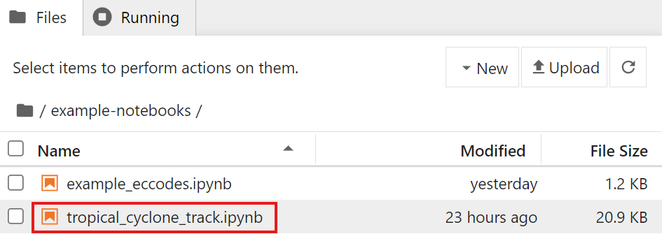
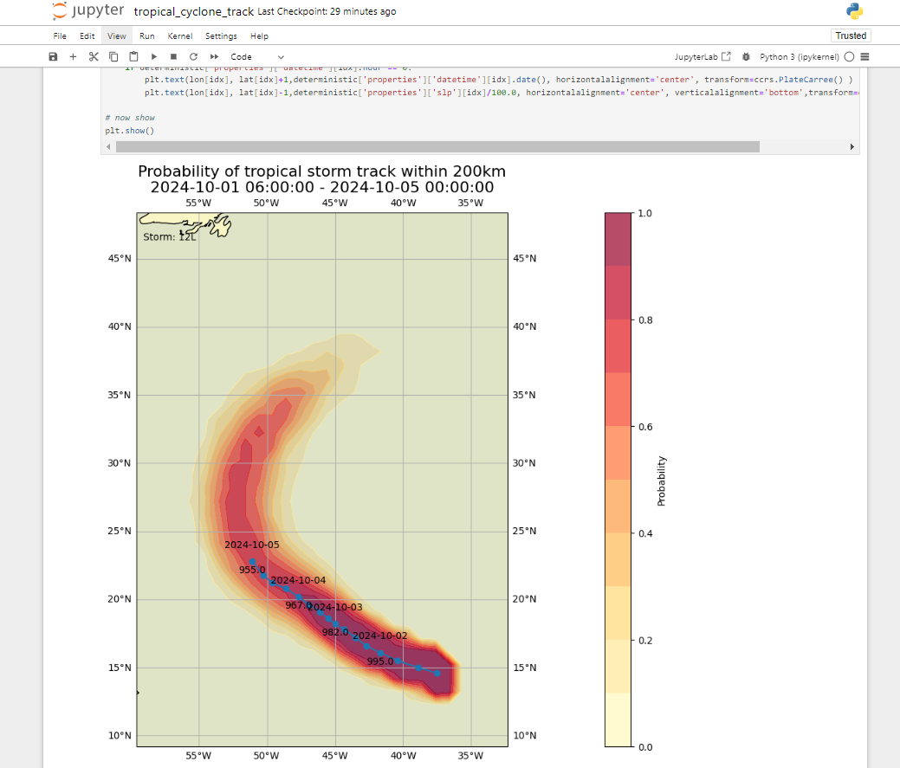

WIS2 in a box training
WIS2 in a box (wis2box) is a Free and Open Source (FOSS) Reference Implementation of a WMO WIS2 Node. The project provides a plug and play toolset to ingest, process, and publish weather/climate/water data using standards-based approaches in alignment with the WIS2 principles. wis2box also provides access to all data in the WIS2 network. wis2box is designed to have a low barrier to entry for data providers, providing enabling infrastructure and services for data discovery, access, and visualization.
This training provides step-by-step explanations of various aspects of the wis2box project as well as a number of exercises to help you publish and download data from WIS2. The training is provided in the form of overview presentations as well as hands-on practical exercises.
Participants will be able to work with sample test data and metadata, as well as integrate their own data and metadata.
This training covers a wide range of topics (install/setup/configuration, publishing/downloading data, etc.).
Goals and learning outcomes
The goals of this training are to become familiar with the following:
- WIS2 architecture core concepts and components
- data and metadata formats used in WIS2 for discovery and access
- wis2box architecture and environment
- wis2box core functions:
- metadata management
- data ingest and transformation to BUFR format
- MQTT broker for WIS2 message publishing
- HTTP endpoint for data download
- API endpoint for programmatic access to data
Navigation
The left hand navigation provides a table of contents for the entire training.
The right hand navigation provides a table of contents for a specific page.
Prerequisites
Knowledge
- Basic Linux commands (see the cheatsheet)
- Basic knowledge of networking and Internet protocols
Software
This training requires the following tools:
- An instance running Ubuntu OS (provided by WMO trainers during local training sessions) see Accessing your student VM
- SSH client to access your instance
- MQTT Explorer on your local machine
- SCP and FTP client to copy files from your local machine
Conventions
Question
A section marked like this invites you to answer a question.
Also you will notice tips and notes sections within the text:
Tip
Tips share help on how to best achieve tasks.
Note
Notes provide additional information on the topic covered by the practical session, as well as how to best achieve tasks.
Examples are indicated as follows:
Configuration
1 2 3 4 | |
Snippets which need to be typed in a on a terminal/console are indicated as:
echo 'Hello world'
Container names (running images) are denoted in bold.
Training location and materials
The training contents, wiki and issue tracker are managed on GitHub at https://github.com/wmo-im/wis2box-training.
Printing the material
This training can be exported to PDF. To save or print this training material, go to the print page, and select File > Print > Save as PDF.
Exercise materials
Exercise materials can be downloaded from the exercise-materials.zip zipfile.
Support
For issues/bugs/suggestions or improvements/contributions to this training, please use the GitHub issue tracker.
All wis2box bugs, enhancements and issues can be reported on GitHub.
For additional support of questions, please contact wis2-support@wmo.int.
As always, wis2box core documentation can always be found at https://docs.wis2box.wis.wmo.int.
Contributions are always encouraged and welcome!
Practical sessions ↵
Connecting to WIS2 over MQTT
Learning outcomes
By the end of this practical session, you will be able to:
- connect to the WIS2 Global Broker using MQTT Explorer
- review the WIS2 topic structure
- review the WIS2 notification message structure
Introduction
WIS2 uses the MQTT protocol to advertise the availability of weather/climate/water data. The WIS2 Global Broker subscribes to all WIS2 Nodes in the network and republishes the messages it receives. The Global Cache subscribes to the Global Broker, downloads the data in the message and then republishes the message on the cache topic with a new URL. The Global Discovery Catalogue publishes discovery metadata from the Broker and provides a search API.
This is an example of the WIS2 notification message structure for a message received on the topic origin/a/wis2/br-inmet/data/core/weather/surface-based-observations/synop:
{
"id": "59f9b013-c4b3-410a-a52d-fff18f3f1b47",
"type": "Feature",
"version": "v04",
"geometry": {
"coordinates": [
-38.69389,
-17.96472,
60
],
"type": "Point"
},
"properties": {
"data_id": "br-inmet/data/core/weather/surface-based-observations/synop/WIGOS_0-76-2-2900801000W83499_20240815T060000",
"datetime": "2024-08-15T06:00:00Z",
"pubtime": "2024-08-15T09:52:02Z",
"integrity": {
"method": "sha512",
"value": "TBuWycx/G0lIiTo47eFPBViGutxcIyk7eikppAKPc4aHgOmTIS5Wb9+0v3awMOyCgwpFhTruRRCVReMQMp5kYw=="
},
"content": {
"encoding": "base64",
"value": "QlVGUgAA+gQAABYAACsAAAAAAAIAHAAH6AgPBgAAAAALAAABgMGWx1AAAM0ABOIAAAODM0OTkAAAAAAAAAAAAAAKb5oKEpJ6YkJ6mAAAAAAAAAAAAAAAAv0QeYA29WQa87ZhH4CQP//z+P//BD////+ASznXuUb///8MgAS3/////8X///e+AP////AB/+R/yf////////////////////6/1/79H/3///gEt////////4BLP6QAf/+/pAB//4H0YJ/YeAh/f2///7TH/////9+j//f///////////////////v0f//////////////////////wNzc3Nw==",
"size": 250
},
"wigos_station_identifier": "0-76-2-2900801000W83499"
},
"links": [
{
"rel": "canonical",
"type": "application/x-bufr",
"href": "http://wis2bra.inmet.gov.br/data/2024-08-15/wis/br-inmet/data/core/weather/surface-based-observations/synop/WIGOS_0-76-2-2900801000W83499_20240815T060000.bufr4",
"length": 250
}
]
}
In this practical session you will learn how to use the MQTT Explorer tool to setup an MQTT client connection to a WIS2 Global Broker and be able to display WIS2 notification messages.
MQTT Explorer is a useful tool to browse and review the topic structure for a given MQTT broker to review data being published.
Note that MQTT is primarily used for "machine-to-machine" communication; meaning that there would normally be a client automatically parsing the messages as they are received. To work with MQTT programmatically (for example, in Python), you can use MQTT client libraries such as paho-mqtt to connect to an MQTT broker and process incoming messages. There exist numerous MQTT client and server software, depending on your requirements and technical environment.
Using MQTT Explorer to connect to the Global Broker
To view messages published by a WIS2 Global Broker you can "MQTT Explorer" which can be downloaded from the MQTT Explorer website.
Open MQTT Explorer and add a new connection to the Global Broker hosted by MeteoFrance using the following details:
- host: globalbroker.meteo.fr
- port: 8883
- username: everyone
- password: everyone

Click on the 'ADVANCED' button, remove the pre-configured topics and add the following topics to subscribe to:
origin/a/wis2/#

Note
When setting up MQTT subscriptions you can use the following wildcards:
- Single-level (+): a single-level wildcard replaces one topic level
- Multi-level (#): a multi-level wildcard replaces multiple topic levels
In this case origin/a/wis2/# will subscribe to all topics under the origin/a/wis2 topic.
Click 'BACK', then 'SAVE' to save your connection and subscription details. Then click 'CONNECT':
Messages should start appearing in your MQTT Explorer session as follows:

You are now ready to start exploring the WIS2 topics and message structure.
Exercise 1: Review the WIS2 topic structure
Use MQTT to browse topic structure under the origin topics.
Question
How can we distinguish the WIS centre that published the data?
Click to reveal answer
You can click on the left hand side window in MQTT Explorer to expand the topic structure.
We can distinguish the WIS centre that published the data by looking at the fourth level of the topic structure. For example, the following topic:
origin/a/wis2/br-inmet/data/core/weather/surface-based-observations/synop
tells us that the data was published a WIS centre with the centre-id br-inmet, which is the centre-id for Instituto Nacional de Meteorologia - INMET, Brazil.
Question
How can we distinguish between messages published by WIS-centres hosting a GTS-to-WIS2 gateway and messages published by WIS-centres hosting a WIS2 node?
Click to reveal answer
We can distinguish messages coming from GTS-to-WIS2 gateway by looking at the centre-id in the topic structure. For example, the following topic:
origin/a/wis2/de-dwd-gts-to-wis2/data/core/I/S/A/I/01/sbbr
tells us that the data was published by the GTS-to-WIS2 gateway hosted by Deutscher Wetterdienst (DWD), Germany. The GTS-to-WIS2 gateway is a special type of data-publisher that publishes data from the Global Telecommunication System (GTS) to WIS2. The topic structure is composed by the TTAAii CCCC headers for the GTS messages.
Exercise 2: Review the WIS2 message structure
Disconnect from MQTT Explorer and update the 'Advanced' sections to change the subscription to the following:
origin/a/wis2/+/data/core/weather/surface-based-observations/synopcache/a/wis2/+/data/core/weather/surface-based-observations/synop

Note
The + wildcard is used to subscribe to all WIS-centres.
Reconnect to the Global Broker and wait for messages to appear.
You can view the content of the WIS2 message in the "Value" section on the right hand side. Try to expand the topic structure to see the different levels of the message until you reach the last level and review message content of one of the messages.
Question
How can we identify the timestamp that the data was published? And how can we identify the timestamp that the data was collected?
Click to reveal answer
The timestamp that the data was published is contained in the properties section of the message with a key of pubtime.
The timestamp that the data was collected is contained in the properties section of the message with a key of datetime.

Question
How can we download the data from the URL provided in the message?
Click to reveal answer
The URL is contained in the links section with rel="canonical" and defined by the href key.
You can copy the URL and paste it into a web browser to download the data.
Exercise 3: Review the difference between 'origin' and 'cache' topics
Make sure you are still connected to the Global Broker using the topic subscriptions origin/a/wis2/+/data/core/weather/surface-based-observations/synop and cache/a/wis2/+/data/core/weather/surface-based-observations/synop as described in Exercise 2.
Try to identify a message for the same centre-id published on both the origin and cache topics.
Question
What is the difference between the messages published on the origin and cache topics?
Click to reveal answer
The messages published on the origin topics are the original messages which the Global Broker republishes from the WIS2 Nodes in the network.
The messages published on the cache topics are the messages for data has been downloaded by the Global Cache. If you check the content of the message from the topic starting with cache, you will see that the 'canonical' link has been updated to a new URL.
There are multiple Global Caches in the WIS2 network, so you will receive one message from each Global Cache that has downloaded the message.
The Global Cache will only download and republish messages that were published on the ../data/core/... topic hierarchy.
Conclusion
Congratulations!
In this practical session, you learned:
- how to subscribe to WIS2 Global Broker services using MQTT Explorer
- the WIS2 topic structure
- the WIS2 notification message structure
- the difference between core and recommended data
- the topic structure used by the GTS-to-WIS2 gateway
- the difference between Global Broker messages published on the
originandcachetopics
Accessing your student VM
Learning outcomes
By the end of this practical session, you will be able to:
- access your student VM over SSH and WinSCP
- verify the required software for the practical exercises is installed
- verify you have access to exercise materials for this training on your local student VM
Introduction
As part of locally run wis2box training sessions, you can access your personal student VM on the local training network named "WIS2-training".
Your student VM has the following software pre-installed:
- Ubuntu 22.0.4.3 LTS ubuntu-22.04.3-live-server-amd64.iso
- Python 3.10.12
- Docker 24.0.6
- Docker Compose 2.21.0
- Text editors: vim, nano
Note
If you want to run this training outside of a local training session, you can provide your own instance using any cloud provider, for example:
- GCP (Google Cloud Platform) VM instance
e2-medium - AWS (Amazon Web Services) ec2-instance
t3a.medium - Azure (Microsoft) Azure Virtual Machine
standard_b2s
Select Ubuntu Server 22.0.4 LTS as OS.
After creating your VM ensure you have installed python, docker and docker compose, as described at wis2box-software-dependencies.
The release archive for wis2box used in this training can be downloaded as follows:
wget https://github.com/wmo-im/wis2box/releases/download/1.0b8/wis2box-setup-1.0b8.zip
unzip wis2box-setup-1.0b8.zip
You can always find the latest 'wis2box-setup' archive at https://github.com/wmo-im/wis2box/releases.
The exercise material used in this training can be downloaded as follows:
wget https://training.wis2box.wis.wmo.int/exercise-materials.zip
unzip exercise-materials.zip
The following additional Python packages are required to run the exercise materials:
pip3 install minio
If you are using the student VM provided during local WIS2 training sessions, the required software will already be installed.
Connect to your student VM on the local training network
Connect your PC on the local Wi-Fi broadcasted in the room during WIS2 training as per the instructions provided by the trainer.
Use an SSH client to connect to your student VM using the following:
- Host: (provided during in-person training)
- Port: 22
- Username: (provided during in-person training)
- Password: (provided during in-person training)
Tip
Contact a trainer if you are unsure about the hostname/username or have issues connecting.
Once connected, please change your password to ensure others cannot access your VM:
limper@student-vm:~$ passwd
Changing password for testuser.
Current password:
New password:
Retype new password:
passwd: password updated successfully
Verify software versions
To be able to run wis2box, the student VM should have Python, Docker and Docker Compose pre-installed.
Check Python version:
python3 --version
Python 3.10.12
Check docker version:
docker --version
Docker version 24.0.6, build ed223bc
Check Docker Compose version:
docker compose version
Docker Compose version v2.21.0
To ensure your user can run Docker commands your user has been added to the docker group.
To test that your user can run docker hello-world, run the following command:
docker run hello-world
This should pull the hello-world image and run a container that prints a message.
Check that you see the following in the output:
...
Hello from Docker!
This message shows that your installation appears to be working correctly.
...
Inspect the exercise materials
Inspect the contents of your home directory; these are the materials used as part of the training and practical sessions.
ls ~/
exercise-materials wis2box-1.0b8
If you have WinSCP installed on your local PC, you can use it to connect to your student VM and inspect the contents of your home directory and download or upload files between your VM and your local PC.
WinSCP is not required for the training, but it can be useful if you want to edit files on your VM using a text editor on your local PC.
Here is how you can connect to your student VM using WinSCP:
Open WinSCP and click on the "New Site". You can create a new SCP connection to your VM as follows:

Click 'Save' and then 'Login' to connect to your VM.
And you should be able to see the following content:

Conclusion
Congratulations!
In this practical session, you learned how to:
- access your student VM over SSH and WinSCP
- verify the required software for the practical exercises is installed
- verify you have access to exercise materials for this training on your local student VM
Initializing wis2box
Learning outcomes
By the end of this practical session, you will be able to:
- run the
wis2box-create-config.pyscript to create the initial configuration - start wis2box and check the status of its components
- access the wis2box-webapp, API, MinIO UI and Grafana dashboard in a browser
- connect to the local wis2box-broker using MQTT Explorer
Note
The current training materials are using wis2box-1.0b8.
See accessing-your-student-vm for instructions on how to download and install the wis2box software stack if you are running this training outside of a local training session.
Preparation
Login to your designated VM with your username and password and ensure you are in the wis2box-1.0b8 directory:
cd ~/wis2box-1.0b8
Creating the initial configuration
The initial configuration for the wis2box requires:
- an environment file
wis2box.envcontaining the configuration parameters - a directory on the host-machine to share between the host machine and the wis2box containers defined by the
WIS2BOX_HOST_DATADIRenvironment variable
The wis2box-create-config.py script can be used to create the initial configuration of your wis2box.
It will ask you a set of question to help setup your configuration.
You will be able to review and update the configuration files after the script has completed.
Run the script as follows:
python3 wis2box-create-config.py
wis2box-host-data directory
The script will ask you to enter the directory to be used for the WIS2BOX_HOST_DATADIR environment variable.
Note that you need to define the full path to this directory.
For example if your username is username, the full path to the directory is /home/username/wis2box-data:
username@student-vm-username:~/wis2box-1.0b8$ python3 wis2box-create-config.py
Please enter the directory to be used for WIS2BOX_HOST_DATADIR:
/home/username/wis2box-data
The directory to be used for WIS2BOX_HOST_DATADIR will be set to:
/home/username/wis2box-data
Is this correct? (y/n/exit)
y
The directory /home/username/wis2box-data has been created.
wis2box URL
Next, you will be asked to enter the URL for your wis2box. This is the URL that will be used to access the wis2box web application, API and UI.
Please use http://<your-hostname-or-ip> as the URL.
Please enter the URL of the wis2box:
For local testing the URL is http://localhost
To enable remote access, the URL should point to the public IP address or domain name of the server hosting the wis2box.
http://username.wis2.training
The URL of the wis2box will be set to:
http://username.wis2.training
Is this correct? (y/n/exit)
WEBAPP, STORAGE and BROKER passwords
You can use the option of random password generation when prompted for and WIS2BOX_WEBAPP_PASSWORD, WIS2BOX_STORAGE_PASSWORD, WIS2BOX_BROKER_PASSWORD and define your own.
Don't worry about remembering these passwords, they will be stored in the wis2box.env file in your wis2box-1.0b8 directory.
Review wis2box.env
Once the scripts is completed check the contents of the wis2box.env file in your current directory:
cat ~/wis2box-1.0b8/wis2box.env
Or check the content of the file via WinSCP.
Question
What is the value of WISBOX_BASEMAP_URL in the wis2box.env file?
Click to reveal answer
The default value for WIS2BOX_BASEMAP_URL is https://{s}.tile.openstreetmap.org/{z}/{x}/{y}.png.
This URL refers to the OpenStreetMap tile server. If you want to use a different map provider, you can change this URL to point to a different tile server.
Question
What is the value of the WIS2BOX_STORAGE_DATA_RETENTION_DAYS environment variable in the wis2box.env file?
Click to reveal answer
The default value for WIS2BOX_STORAGE_DATA_RETENTION_DAYS is 30 days. You can change this value to a different number of days if you wish.
The wis2box-management container runs a cronjob on a daily basis to remove data older than the number of days defined by WIS2BOX_STORAGE_DATA_RETENTION_DAYS from the wis2box-public bucket and the API backend:
0 0 * * * su wis2box -c "wis2box data clean --days=$WIS2BOX_STORAGE_DATA_RETENTION_DAYS"
Note
The wis2box.env file contains environment variables defining the configuration of your wis2box. For more information consult the wis2box-documentation.
Do not edit the wis2box.env file unless you are sure of the changes you are making. Incorrect changes can cause your wis2box to stop working.
Do not share the contents of your wis2box.env file with anyone, as it contains sensitive information such as passwords.
Start wis2box
Ensure you are in the directory containing the wis2box software stack definition files:
cd ~/wis2box-1.0b8
Start wis2box with the following command:
python3 wis2box-ctl.py start
Inspect the status with the following command:
python3 wis2box-ctl.py status
Repeat this command until all services are up and running.
wis2box and Docker
wis2box runs as a set of Docker containers managed by docker-compose.
The services are defined in the various docker-compose*.yml which can be found in the ~/wis2box-1.0b8/ directory.
The Python script wis2box-ctl.py is used to run the underlying Docker Compose commands that control the wis2box services.
You don't need to know the details of the Docker containers to run the wis2box software stack, but you can inspect the docker-compose*.yml and files to see how the services are defined. If you are interested in learning more about Docker, you can find more information in the Docker documentation.
To login to the wis2box-management container, use the following command:
python3 wis2box-ctl.py login
Inside the wis2box-management container you can run various commands to manage your wis2box, such as:
wis2box auth add-token --path processes/wis2box: to create an authorization token for theprocesses/wis2boxendpointwis2box data clean --days=<number-of-days>: to clean up data older than a certain number of days from thewis2box-publicbucket
To exit the container and go back to the host machine, use the following command:
exit
Run the following command to see the docker containers running on your host machine:
docker ps
You should see the following containers running:
- wis2box-management
- wis2box-api
- wis2box-minio
- wis2box-webapp
- wis2box-auth
- wis2box-ui
- wis2downloader
- elasticsearch
- elasticsearch-exporter
- nginx
- mosquitto
- prometheus
- grafana
- loki
These containers are part of the wis2box software stack and provide the various services required to run the wis2box.
Run the following command to see the docker volumes running on your host machine:
docker volume ls
You should see the following volumes:
- wis2box_project_auth-data
- wis2box_project_es-data
- wis2box_project_htpasswd
- wis2box_project_minio-data
- wis2box_project_prometheus-data
- wis2box_project_loki-data
As well as some anonymous volumes used by the various containers.
The volumes starting with wis2box_project_ are used to store persistent data for the various services in the wis2box software stack.
wis2box API
The wis2box contains an API (Application Programming Interface) that provide data access and processes for interactive visualization, data transformation and publication.
Open a new tab and navigate to the page http://<your-host>/oapi.

This is the landing page of the wis2box API (running via the wis2box-api container).
Question
What collections are currently available?
Click to reveal answer
To view collections currently available through the API, click View the collections in this service:

The following collections are currently available:
- Stations
- Data notifications
- Discovery metadata
Question
How many data notifications have been published?
Click to reveal answer
Click on "Data notifications", then click on Browse through the items of "Data Notifications".
You will note that the page says "No items" as no Data notifications have been published yet.
wis2box webapp
Open a web browser and visit the page http://<your-host>/wis2box-webapp.
You will see a pop-up asking for your username and password. Use the default username wis2box-user and the WIS2BOX_WEBAPP_PASSWORD defined in the wis2box.env file and click "Sign in":
Note
Check you wis2box.env for the value of your WIS2BOX_WEBAPP_PASSWORD. You can use the following command to check the value of this environment variable:
cat ~/wis2box-1.0b8/wis2box.env | grep WIS2BOX_WEBAPP_PASSWORD
Once logged in, you move your mouse to the menu on the left to see the options available in the wis2box web application:

This is the wis2box web application to enable you to interact with your wis2box:
- create and manage datasets
- update/review your station metadata
- ingest ASCII and CSV data
- monitor notifications published on your wis2box-broker
We will use this web application in a later session.
wis2box-broker
Open the MQTT Explorer on your computer and prepare a new connection to connect to your broker (running via the wis2box-broker container).
Click + to add a new connection:

You can click on the 'ADVANCED' button and verify you have subscriptions to the the following topics:
#$SYS/#

Note
The # topic is a wildcard subscription that will subscribe to all topics published on the broker.
The messages published under the $SYS topic are system messages published by the mosquitto service itself.
Use the following connection details, making sure to replace the value of <your-host> with your hostname and <WIS2BOX_BROKER_PASSWORD> with the value from your wis2box.env file:
- Protocol: mqtt://
- Host:
<your-host> - Port: 1883
- Username: wis2box
- Password:
<WIS2BOX_BROKER_PASSWORD>
Note
You can check your wis2box.env for the value of your WIS2BOX_BROKER_PASSWORD. You can use the following command to check the value of this environment variable:
cat ~/wis2box-1.0b8/wis2box.env | grep WIS2BOX_BROKER_PASSWORD
Note that this your internal broker password, the Global Broker will use different (read-only) credentials to subscribe to your broker. Never share this password with anyone.
Make sure to click "SAVE" to store your connection details.
Then click "CONNECT" to connect to your wis2box-broker.

Once you are connected, verify that your the internal mosquitto statistics being published by your broker under the $SYS topic:

Keep the MQTT Explorer open, as we will use it to monitor the messages published on the broker.
MinIO UI
Open a web browser and visit the page http://<your-host>:9001:

This is the MinIO UI (running via the wis2box-storage container).
The username and password are defined in the wis2box.env file in your wis2box data directory by the environment variables WIS2BOX_STORAGE_USERNAME and WIS2BOX_STORAGE_PASSWORD. The default username is wis2box.
Note
You can check your wis2box.env for the value of your WIS2BOX_STORAGE_PASSWORD. You can use the following command to check the value of this environment variable:
cat ~/wis2box-1.0b8/wis2box.env | grep WIS2BOX_STORAGE_PASSWORD
Note that these are the read-write credentials for your MinIO instance. Never share these credentials with anyone. The Global Services can only download data from your MinIO instance using the web-proxy on the wis2box-public bucket.
Try to login to your MinIO UI. You will see that there 3 buckets already defined:
wis2box-incoming: used to receive incoming datawis2box-public: used to store data that is made available in the WIS2 notifications, the content of this bucket is proxied as/dataon yourWIS2BOX_URLvia the nginx containerwis2box-archive: used to archive data fromwis2box-incomingon a daily basis

Note
The wis2box-storage container (provided by MinIO) will send a notification on the wis2box-broker when data is received. The wis2box-management container is subscribed to all messages on wis2box/# and will receive these notifications, triggering the data plugins defined in the datasets.
Using the MinIO UI to test data ingestion
First click on "browse" for the wis2box-incoming bucket, then click on "Create new path":

And enter the path /testing/upload/:

Right-click on this link and select 'save link as' : randomfile.txt, to download the file to your local machine.
Then click on "Upload" and select the randomfile.txt you downloaded from your local machine and upload it to the wis2box-incoming bucket
You should now see the file in the wis2box-incoming bucket:

Question
Did you see a message published on your MQTT broker in MQTT Explorer?
Click to reveal answer
If you are connected to your wis2box-broker, you should note that a message has been published on the wis2box/storage topic:

This is how MinIO informs the wis2box-management service that there is new data to process.
Note: this is not a WIS2 notification, but an internal message between components within the wis2box software stack.
The wis2box is not yet configured to process any files you upload, so the file will not be processed and no WIS2 notification will be published.
We will check the error message produced by the wis2box-management container in the Grafana dashboard in the next step.
Grafana UI
Open a web browser and visit the page http://<your-host>:3000:

This is the Grafana UI, where you can view the wis2box workflow monitoring dashboard. You can also access the logs of the various containers in the wis2box software stack via the 'Explore' option in the menu.
Question
Can you find the error message produced by the wis2box-management container when you uploaded the file to the wis2box-incoming bucket?
Click to reveal answer
You will should see an error message indicating that the wis2box could not process the file you uploaded.
This is expected as we have not yet configured any datasets in the wis2box, you will learn how to do this in the next practical session.
Conclusion
Congratulations!
In this practical session, you learned how to:
- run the
wis2box-create-config.pyscript to create the initial configuration - start wis2box and check the status of its components
- connect to the MQTT broker on your student-VM using MQTT Explorer
- access the wis2box-UI, wis2box-webapp and wis2box-API in a browser
- upload a file to the "wis2box-incoming"-bucket in the MinIO UI
- view the Grafana dashboard to monitor the wis2box workflow
Configuring datasets in wis2box
Learning outcomes
By the end of this practical session, you will be able to:
- create a new dataset
- create discovery metadata for a dataset
- configure data mappings for a dataset
- publish a WIS2 notification with a WCMP2 record
- update and re-publish your dataset
Introduction
wis2box uses datasets that are associated with discovery metadata and data mappings.
Discovery metadata is used to create a WCMP2 (WMO Core Metadata Profile 2) record that is shared using a WIS2 notification published on your wis2box-broker.
The data mappings are used to associate a data plugin to your input data, allowing your data to be transformed prior to being published using the WIS2 notification.
This session will walk you through creating a new dataset, creating discovery metadata, and configuring data mappings. You will inspect your dataset in the wis2box-api and review the WIS2 notification for your discovery metadata.
Preparation
Connect to your broker using MQTT Explorer.
Instead of using your internal broker credentials, use the public credentials everyone/everyone:

Note
You never need to share the credentials of your internal broker with external users. The 'everyone' user is a public user to enable sharing of WIS2 notifications.
The everyone/everyone credentials has read-only access on the topic 'origin/a/wis2/#'. This is the topic where the WIS2 notifications are published. The Global Broker can subscribe with these public credentials to receive the notifications.
The 'everyone' user will not see internal topics or be able to publish messages.
Open a browser and open a page to http://<your-host>/wis2box-webapp. Make sure you are logged in and can access the 'dataset editor' page.
See the section on Initializing wis2box if you need to remember how to connect to the broker or access the wis2box-webapp.
Create an authorization token for processes/wis2box
You will need an authorization token for the 'processes/wis2box' endpoint to publish your dataset.
To create an authorization token, access your training VM over SSH and use the following commands to login to the wis2box-management container:
cd ~/wis2box-1.0b8
python3 wis2box-ctl.py login
Then run the following command to create a randomly generated authorization token for the 'processes/wis2box' endpoint:
wis2box auth add-token --path processes/wis2box
You can also create a token with a specific value by providing the token as an argument to the command:
wis2box auth add-token --path processes/wis2box MyS3cretToken
Make sure to copy the token value and store it on your local machine, as you will need it later.
Once you have your token, you can exit the wis2box-management container:
exit
Creating a new dataset in the wis2box-webapp
Navigate to the 'dataset editor' page in the wis2box-webapp of your wis2box instance by going to http://<your-host>/wis2box-webapp and selecting 'dataset editor' from the menu on the left hand side.
On the 'dataset editor' page, under the 'Datasets' tab, click on "Create New ...":

A pop-up window will appear, asking you to provide:
- Centre ID : this is the agency acronym (in lower case and no spaces), as specified by the WMO Member, that identifies the data centre responsible for publishing the data.
- Data Type: The type of data you are creating metadata for. You can choose between using a predefined template or selecting 'other'. If 'other' is selected, more fields will have to be manually filled.
Centre ID
Your centre-id should start with the TLD of your country, followed by a dash (-) and an abbreviated name of your organization (for example fr-meteofrance). The centre-id must be lowercase and use alphanumeric characters only. The dropdown list shows all currently registered centre-ids on WIS2 as well as any centre-id you have already created in wis2box.
Data Type Templates
The Data Type field allows you to select from a list of templates available in the wis2box-webapp dataset editor. A template will pre-populate the form with suggested default values appropriate for the data type. This includes suggested title and keywords for the metadata and pre-configured data plugins. The topic will be fixed to the default topic for the data type.
For the purpose of the training we will use the weather/surface-based-observations/synop data type which includes data plugins that ensure the data is transformed into BUFR format before being published.
If you want to publish CAP alerts using wis2box, use the template weather/advisories-warnings. This template includes a data plugin that verifies the input data is a valid CAP alert before publishing. To create CAP alerts and publish them via wis2box you can use CAP Composer.
Please choose a centre-id appropriate for your organization.
For Data Type, select weather/surface-based-observations/synop:

Click continue to form to proceed, you will now be presented with the Dataset Editor Form.
Since you selected the weather/surface-based-observations/synop data type, the form will be pre-populated with some initial values related to this data type.
Creating discovery metadata
The Dataset Editor Form allows you to provide the Discovery Metadata for your dataset that the wis2box-management container will use to publish a WCMP2 record.
Since you have selected the 'weather/surface-based-observations/synop' data type, the form will be pre-populated with some default values.
Review the title and keywords, and update them as necessary, and provide a description for your dataset:

Note there are options to change the 'WMO Data Policy' from 'core' to 'recommended' or to modify your default Metadata Identifier, please keep data-policy as 'core' and use the default Metadata Identifier.
Next, review the section defining your 'Temporal Properties' and 'Spatial Properties'. You can adjust the bounding box by updating the 'North Latitude', 'South Latitude', 'East Longitude', and 'West Longitude' fields:

Next, fill out the section defining the 'Contact Information of the Data Provider':

Finally, fill out the section defining the 'Data Quality Information':
Once you are done filling out all the sections, click 'VALIDATE FORM' and check the form for any errors:

If there are any errors, correct them and click 'VALIDATE FORM' again.
Making sure you have no errors and that you get a pop-up indication your form has been validated:

Next, before submitting your dataset, review the data mappings for your dataset.
Configuring data mappings
Since you used a template to create your dataset, the dataset mappings have been pre-populated with the defaults plugins for the 'weather/surface-based-observations/synop' data type. Data plugins are used in the wis2box to transform data before it is published using the WIS2 notification.

Note that you can click on the "update"-button to change settings for the plugin such as file-extension and the file-pattern, you can leave the default settings for now. In a later session, you will learn more about BUFR and the transformation of data into BUFR format.
Submitting your dataset
Finally, you can click 'submit' to publish your dataset.
You will need to provide the authorization token for 'processes/wis2box' that you created earlier. If you have not done so, you can create a new token by following the instructions in the preparation section.
Check that you get the following message after submitting your dataset, indicating that the dataset was successfully submitted:

After you click 'OK', you are redirected to the Dataset Editor home page. Now if you click on the 'Dataset' tab, you should see your new dataset listed:

Reviewing the WIS2-notification for your discovery metadata
Go to MQTT Explorer, if you were connected to the broker, you should see a new WIS2 notification published on the topic origin/a/wis2/<your-centre-id>/metadata:

Inspect the content of the WIS2 notification you published. You should see a JSON with a structure corresponding to the WIS Notification Message (WNM) format.
Question
On what topic is the WIS2 notification published?
Click to reveal answer
The WIS2 notification is published on the topic origin/a/wis2/<your-centre-id>/metadata.
Question
Try to find the title, description and keywords you provided in the discovery metadata in the WIS2 notification. Can you find them?
Click to reveal answer
Note that the title, description, and keywords you provided in the discovery metadata are not present in the WIS2 notification payload!
Instead, try to look for the canonical link in the "links"-section in the WIS2 notification:

The WIS2 notification contains a canonical link to the WCMP2 record that was published. If you copy-paste this link into a browser, you will download the WCMP2 record and see the title, description, and keywords you provided.
Conclusion
Congratulations!
In this practical session, you learned how to:
- create a new dataset
- define your discovery metadata
- review your data mappings
- publish discovery metadata
- review the WIS2 notification for your discovery metadata
Configuring station metadata
Learning outcomes
By the end of this practical session, you will be able to:
- create an authorization token for the
collections/stationsendpoint - add station metadata to wis2box
- update/delete station metadata using the wis2box-webapp
Introduction
For sharing data internationally between WMO Members, it is important to have a common understanding of the stations that are producing the data. The WMO Integrated Global Observing System (WIGOS) provides a framework for the integration of observing systems and data management systems. The WIGOS Station Identifier (WSI) is used as the unique reference of the station which produced a specific set of observation data.
wis2box has a collection of station metadata that is used to describe the stations that are producing the observation data and should be retrieved from OSCAR/Surface. The station metadata in wis2box is used by the BUFR transformation tools to check that input data contains a valid WIGOS Station Identifier (WSI) and to provide a mapping between the WSI and the station metadata.
Create an authorization token for collections/stations
To edit stations via the wis2box-webapp you will first to need create an authorization token.
Login to your student VM and ensure you are in the wis2box-1.0b8 directory:
cd ~/wis2box-1.0b8
Then login into the wis2box-management container with the following command:
python3 wis2box-ctl.py login
Within the wis2box-management container your can create an authorization token for a specific endpoint using the command: wis2box auth add-token --path <my-endpoint>.
For example, to use a random automatically generated token for the collections/stations endpoint:
wis2box auth add-token --path collections/stations
The output will look like this:
Continue with token: 7ca20386a131f0de384e6ffa288eb1ae385364b3694e47e3b451598c82e899d1 [y/N]? y
Token successfully created
Or, if you want to define your own token for the collections/stations endpoint, you can use the following example:
wis2box auth add-token --path collections/stations DataIsMagic
Output:
Continue with token: DataIsMagic [y/N]? y
Token successfully created
Please create an authorization token for the collections/stations endpoint using the instructions above.
add station metadata using the wis2box-webapp
The wis2box-webapp provides a graphical user interface to edit station metadata.
Open the wis2box-webapp in your browser by navigating to http://<your-host>/wis2box-webapp:

And select stations:

When you click add 'add new station' you are asked to provide the WIGOS station identifier for the station you want to add:

Add station metadata for 3 or more stations
Please add three or more stations to the wis2box station metadata collection of your wis2box.
Please use stations from your country if possible, especially if you brought your own data.
If your country does not have any stations in OSCAR/Surface, you can use the following stations for the purpose of this exercise:
- 0-20000-0-91334
- 0-20000-0-96323 (note missing station elevation in OSCAR)
- 0-20000-0-96749 (note missing station elevation in OSCAR)
When you click search the station data is retrieved from OSCAR/Surface, please note that this can take a few seconds.
Review the data returned by OSCAR/Surface and add missing data where required. Select a topic for the station and provide your authorization token for the collections/stations endpoint and click 'save':


Go back to the station list and you will see the station you added:

Repeat this process until you have at least 3 stations configured.
Deriving missing elevation information
If your station elevation is missing, there are online services to help lookup the elevation using open elevation data. One such example is the Open Topo Data API.
For example, to get the elevation at latitude -6.15558 and longitude 106.84204, you can copy-paste the following URL in a new browser-tab:
https://api.opentopodata.org/v1/aster30m?locations=-6.15558,106.84204
Output:
{
"results": [
{
"dataset": "aster30m",
"elevation": 7.0,
"location": {
"lat": -6.15558,
"lng": 106.84204
}
}
],
"status": "OK"
}
Review your station metadata
The station metadata is stored in the backend of wis2box and made available via the wis2box-api.
If you open a browser and navigate to http://<your-host>/oapi/collections/stations/items you will see the station metadata you added:

Review your station metadata
Verify the stations you added are associated to your dataset by visiting http://<your-host>/oapi/collections/stations/items in your browser.
You also have the option to view/update/delete the station in the wis2box-webapp. Note that you are required to provide your authorization token for the collections/stations endpoint to update/delete the station.
Update/delete station metadata
Try and see if you can update/delete the station metadata for one of the stations you added using the wis2box-webapp.
Bulk station metadata upload
Note that wis2box also has the ability to perform "bulk" loading of station metadata from a CSV file using the command line in the wis2box-management container.
python3 wis2box-ctl.py login
wis2box metadata station publish-collection -p /data/wis2box/metadata/station/station_list.csv -th origin/a/wis2/centre-id/weather/surface-based-observations/synop
This allows you to upload a large number of stations at once and associate them with a specific topic.
You can create the CSV file using Excel or a text editor and then upload it to wis2box-host-datadir to make it available to the wis2box-management container in the /data/wis2box/ directory.
After doing a bulk upload of stations, it is recommended to review the stations in the wis2box-webapp to ensure the data was uploaded correctly.
See the official wis2box documentation for more information on how to use this feature.
Conclusion
Congratulations!
In this practical session, you learned how to:
- create an authorization token for the
collections/stationsendpoint to be used with the wis2box-webapp - add station metadata to wis2box using the wis2box-webapp
- view/update/delete station metadata using the wis2box-webapp
Monitoring WIS2 Notifications
Learning outcomes
By the end of this practical session, you will be able to:
- trigger the wis2box workflow by uploading data in MinIO using the
wis2box data ingestcommand - view warnings and errors displayed in the Grafana dashboard
- check the content of the data being published
Introduction
The Grafana dashboard uses data from Prometheus and Loki to display the status of your wis2box. Prometheus store time-series data from the metrics collected, while Loki store the logs from the containers running on your wis2box instance. This data allows you to check how much data is received on MinIO and how many WIS2 notifications are published, and if there are any errors detected in the logs.
To see the content of the WIS2 notifications that are being published on different topics of your wis2box you can use the 'Monitor' tab in the wis2box-webapp.
Preparation
This section will use the "surface-based-observations/synop" dataset previously created in the Configuring datasets in wis2box practical session.
Login to your student VM using your SSH client (PuTTY or other).
Make sure wis2box is up and running:
cd ~/wis2box-1.0b8/
python3 wis2box-ctl.py start
python3 wis2box-ctl.py status
Make sure your have MQTT Explorer running and connected to your instance using the public credentials everyone/everyone with a subscription to the topic origin/a/wis2/#.
Make sure you have access to the MinIO web interface by going to http://<your-host>:9000 and you are logged (using WIS2BOX_STORAGE_USERNAME and WIS2BOX_STORAGE_PASSWORD from your wis2box.env file).
Make sure you have a web browser open with the Grafana dashboard for your instance by going to http://<your-host>:3000.
Ingesting some data
Please execute the following commands from your SSH-client session:
Copy the sample data file aws-example.csv to the the directory you defined as the WI2BOX_HOST_DATADIR in your wis2box.env file.
cp ~/exercise-materials/monitoring-exercises/aws-example.csv ~/wis2box-data/
Make sure you are in the wis2box-1.0b8 directory and login to the wis2box-management container:
cd ~/wis2box-1.0b8
python3 wis2box-ctl.py login
Verify the sample data is available in the directory /data/wis2box/ within the wis2box-management container:
ls -lh /data/wis2box/aws-example.csv
Note
The WIS2BOX_HOST_DATADIR is mounted as /data/wis2box/ inside the wis2box-management container by the docker-compose.yml file included in the wis2box-1.0b8 directory.
This allows you to share data between the host and the container.
Exercise 1: ingesting data using wis2box data ingest
Execute the following command to ingest the sample data file aws-example.csv to your wis2box-instance:
wis2box data ingest -p /data/wis2box/aws-example.csv --metadata-id urn:wmo:md:not-my-centre:core.surface-based-observations.synop
Was the data successfully ingested? If not, what was the error message and how can you fix it?
Click to reveal answer
You will see the following output:
Error: metadata_id=urn:wmo:md:not-my-centre:core.surface-based-observations.synop not found in data mappings
The error message indicates that the metadata identifier you provided does not match any of the datasets you have configured in your wis2box-instance.
Provide the correct metadata-id that matches the dataset you created in the previous practical session and repeat the data ingest command until you should see the following output:
Processing /data/wis2box/aws-example.csv
Done
Go to the MinIO console in your browser and check if the file aws-example.csv was uploaded to the wis2box-incoming bucket. You should see there is a new directory with the name of the dataset you provided in the --metadata-id option:

Note
The wis2box data ingest command uploaded the file to the wis2box-incoming bucket in MinIO in a directory named after the metadata identifier you provided.
Go to the Grafana dashboard in your browser and check the status of the data ingest.
Exercise 2: check the status of the data ingest
Go to the Grafana dashboard in your browser and check the status of the data ingest.
Was the data successfully ingested?
Click to reveal answer
The panel at the bottom of the Grafana home dashboard reports the following warnings:
WARNING - input=aws-example.csv warning=Station 0-20000-0-60355 not in station list; skipping
WARNING - input=aws-example.csv warning=Station 0-20000-0-60360 not in station list; skipping
This warning indicates that the stations are not defined in the station list of your wis2box. No WIS2 notifications will be published for this station until you add it to the station list and associate it with the topic for your dataset.
Exercise 3: add the test stations and repeat the data ingest
Add the stations to your wis2box using the station editor in wis2box-webapp, and associate the stations with the topic for your dataset.
Now re-upload the sample data file aws-example.csv to the same path in MinIO you used in the previous exercise.
Check the Grafana dashboard, are there any new errors or warnings ? How can you see that the test data was successfully ingested and published?
Click to reveal answer
You can check the charts on the Grafana home dashboard to see if the test data was successfully ingested and published.
If successful, you should see the following:

Exercise 4: check the MQTT broker for WIS2 notifications
Go to the MQTT Explorer and check if you can see the WIS2 Notification Message for the data you just ingested.
How many WIS2 data notifications were published by your wis2box?
How do you access the content of the data being published?
Click to reveal answer
You should see 6 WIS2 data notifications published by your wis2box.
To access the content of the data being published, you can expand the topic structure to see the different levels of the message until you reach the last level and review message content of one of the messages.
The message content has a "links" section with a "rel" key of "canonical" and a "href" key with the URL to download the data. The URL will be in the format http://<your-host>/data/....
Note that the data-format is BUFR and you will need a BUFR parser to view the content of the data. The BUFR format is a binary format used by meteorological services to exchange data. The data-plugins inside wis2box transformed the data from CSV to BUFR before publishing it.
Viewing the data content you have published
You can use the wis2box-webapp to view the content of the WIS2 data notifications that have been published by your wis2box.
Open the wis2box-webapp in your browser by navigating to http://<your-host>/wis2box-webapp and select the Monitoring tab:

In the monitoring-tab select your dataset-id and click "UPDATE"
Exercise 5: view the WIS2 notifications in the wis2box-webapp
How many WIS2 data notifications were published by your wis2box?
What is the air-temperature reported in the last notification at the station with the WIGOS-identifier=0-20000-0-60355?
Click to reveal answer
If you have successfully ingested the test data, you should see 6 WIS2 data notifications published by your wis2box.
To see the air-temperature measured for the station with WIGOS-identifier=0-20000-0-60355, click on the "INSPECT"-button next to the file for that station to open a pop-up window displaying the parsed content of the data file. The air-temperature measured at this station was 25.0 degrees Celsius.
Note
The wis2box-api container includes tools to parse BUFR files and display the content in a human-readable format. This is a not a core requirements for the WIS2.0 implementation, but was included in the wis2box to aid data publishers in checking the content of the data they are publishing.
Conclusion
Congratulations!
In this practical session, you learned how to:
- trigger the wis2box workflow by uploading data in MinIO using the
wis2box data ingestcommand - view the WIS2 notifications published by your wis2box in the Grafana dashboard and MQTT Explorer
- check the content of the data being published using the wis2box-webapp
Converting SYNOP data to BUFR from the command line
Learning outcomes
By the end of this practical session, you will be able to:
- use the synop2bufr tool to convert FM-12 SYNOP reports to BUFR;
- diagnose and fix simple coding errors in FM-12 SYNOP reports prior to format conversion;
Introduction
Surface weather reports from land surface stations have historically been reported hourly or at the main (00, 06, 12 and 18 UTC) and intermediate (03, 09, 15, 21 UTC) synoptic hours. Prior to the migration to BUFR these reports were encoded in the plain text FM-12 SYNOP code form. Whilst the migration to BUFR was scheduled to be complete by 2012 a large number of reports are still exchanged in the legacy FM-12 SYNOP format. Further information on the FM-12 SYNOP format can be found in the WMO Manual on Codes, Volume I.1 (WMO-No. 306, Volume I.1).
WMO Manual on Codes, Volume I.1
To aid with completing migration to BUFR some tools have been developed for encoding FM-12 SYNOP reports to BUFR, in this session you will learn how to use these tools as well as the relationship between the information contained in the FM-12 SYNOP reports and BUFR messages.
Preparation
Prerequisites
- Ensure that your wis2box has been configured and started.
- Confirm the status by visiting the wis2box API (
http://<your-host-name>/oapi) and verifying that the API is running. - Make sure to read the synop2bufr primer and ecCodes primer sections before starting the exercises.
synop2bufr primer
Below are essential synop2bufr commands and configurations:
transform
The transform function converts a SYNOP message to BUFR:
synop2bufr data transform --metadata my_file.csv --output-dir ./my_directory --year message_year --month message_month my_SYNOP.txt
Note that if the metadata, output directory, year and month options are not specified, they will assume their default values:
| Option | Default |
|---|---|
| --metadata | station_list.csv |
| --output-dir | The current working directory. |
| --year | The current year. |
| --month | The current month. |
Note
One must be cautious using the default year and month, as the day of the month specified in the report may not correspond (e.g. June does not have 31 days).
In the examples, the year and month are not given, so feel free to specify a date yourself or use the default values.
ecCodes primer
ecCodes provides both command line tools and can be embedded in your own applications. Below are some useful command line utilities to work with BUFR data.
bufr_dump
The bufr_dump command is a generic BUFR information tool. It has many options, but the following will be the most applicable to the exercises:
bufr_dump -p my_bufr.bufr4
This will display BUFR content to your screen. If you are interested in the values taken by a variable in particular, use the egrep command:
bufr_dump -p my_bufr.bufr4 | egrep -i temperature
This will display variables related to temperature in your BUFR data. If you want to do this for multiple types of variables, filter the output using a pipe (|):
bufr_dump -p my_bufr.bufr4 | egrep -i 'temperature|wind'
Converting FM-12 SYNOP to BUFR using synop2bufr from the command line
The eccodes library and synop2bufr module are installed in the wis2box-api container. In order to do the next few exercises we will copy the synop2bufr-exercises directory to the wis2box-api container and run the exercises from there.
docker cp ~/exercise-materials/synop2bufr-exercises wis2box-api:/root
Now we can enter the container and run the exercises:
docker exec -it wis2box-api /bin/bash
Exercise 1
Navigate to the /root/synop2bufr-exercises/ex_1 directory and inspect the SYNOP message file message.txt:
cd /root/synop2bufr-exercises/ex_1
more message.txt
Question
How many SYNOP reports are in this file?
Click to reveal answer
There is 1 SYNOP report, as there is only 1 delimiter (=) at the end of the message.
Inspect the station list:
more station_list.csv
Question
How many stations are listed in the station list?
Click to reveal answer
There is 1 station, the station_list.csv contains one row of station metadata.
Question
Try to convert message.txt to BUFR format.
Click to reveal answer
To convert the SYNOP message to BUFR format, use the following command:
synop2bufr data transform --metadata station_list.csv --output-dir ./ --year 2024 --month 09 message.txt
Tip
See the synop2bufr primer section.
Inspect the resulting BUFR data using bufr_dump.
Question
Find how to compare the latitude and longitude values to those in the station list.
Click to reveal answer
To compare the latitude and longitude values in the BUFR data to those in the station list, use the following command:
bufr_dump -p WIGOS_0-20000-0-15015_20240921T120000.bufr4 | egrep -i 'latitude|longitude'
This will display the latitude and longitude values in the BUFR data.
Tip
See the ecCodes primer section.
Exercise 2
Navigate to the exercise-materials/synop2bufr-exercises/ex_2 directory and inspect the SYNOP message file message.txt:
cd /root/synop2bufr-exercises/ex_2
more message.txt
Question
How many SYNOP reports are in this file?
Click to reveal answer
There are 3 SYNOP reports, as there are 3 delimiters (=) at the end of the message.
Inspect the station list:
more station_list.csv
Question
How many stations are listed in the station list?
Click to reveal answer
There are 3 stations, the station_list.csv contains three rows of station metadata.
Question
Convert message.txt to BUFR format.
Click to reveal answer
To convert the SYNOP message to BUFR format, use the following command:
synop2bufr data transform --metadata station_list.csv --output-dir ./ --year 2024 --month 09 message.txt
Question
Based on the results of the exercises in this and the previous exercise, how would you predict the number of resulting BUFR files based upon the number of SYNOP reports and stations listed in the station metadata file?
Click to reveal answer
To see the produced BUFR-files run the following command:
ls -l *.bufr4
The number of BUFR files produced will be equal to the number of SYNOP reports in the message file.
Inspect the resulting BUFR data using bufr_dump.
Question
How can you check the WIGOS Station ID encoded inside the BUFR data of each file produced?
Click to reveal answer
This can be done using the following commands:
bufr_dump -p WIGOS_0-20000-0-15015_20240921T120000.bufr4 | egrep -i 'wigos'
bufr_dump -p WIGOS_0-20000-0-15020_20240921T120000.bufr4 | egrep -i 'wigos'
bufr_dump -p WIGOS_0-20000-0-15090_20240921T120000.bufr4 | egrep -i 'wigos'
Note that if you have a directory with just these 3 BUFR files, you can use Linux wildcards as follows:
bufr_dump -p *.bufr4 | egrep -i 'wigos'
Exercise 3
Navigate to the exercise-materials/synop2bufr-exercises/ex_3 directory and inspect the SYNOP message file message.txt:
cd /root/synop2bufr-exercises/ex_3
more message.txt
This SYNOP message only contains one longer report with more sections.
Inspect the station list:
more station_list.csv
Question
Is it problematic that this file contains more stations than there are reports in the SYNOP message?
Click to reveal answer
No, this is not a problem provided that there exists a row in the station list file with a station TSI matching that of the SYNOP report we are trying to convert.
Note
The station list file is a source of metadata for synop2bufr to provide the information missing in the alphanumeric SYNOP report and required in the BUFR SYNOP.
Question
Convert message.txt to BUFR format.
Click to reveal answer
This is done using the transform command, for example:
synop2bufr data transform --metadata station_list.csv --output-dir ./ --year 2024 --month 09 message.txt
Inspect the resulting BUFR data using bufr_dump.
Question
Find the following variables:
- Air temperature (K) of the report
- Total cloud cover (%) of the report
- Total period of sunshine (mins) of the report
- Wind speed (m/s) of the report
Click to reveal answer
To find the variables by keyword in the BUFR data, you can use the following commands:
bufr_dump -p WIGOS_0-20000-0-15260_20240921T115500.bufr4 | egrep -i 'temperature'
You can use the following command to search for multiple keywords:
bufr_dump -p WIGOS_0-20000-0-15260_20240921T115500.bufr4 | egrep -i 'temperature|cover|sunshine|wind'
Tip
You may find the last command of the ecCodes primer section useful.
Exercise 4
Navigate to the exercise-materials/synop2bufr-exercises/ex_4 directory and inspect the SYNOP message file message.txt:
cd /root/synop2bufr-exercises/ex_4
more message_incorrect.txt
Question
What is incorrect about this SYNOP file?
Click to reveal answer
The SYNOP report for 15015 is missing the delimiter (=) that allows synop2bufr to distinguish this report from the next.
Attempt to convert message_incorrect.txt using station_list.csv
Question
What problem(s) did you encounter with this conversion?
Click to reveal answer
To convert the SYNOP message to BUFR format, use the following command:
synop2bufr data transform --metadata station_list.csv --output-dir ./ --year 2024 --month 09 message_incorrect.txt
Attempting to convert should raise the following errors:
[ERROR] Unable to decode the SYNOP message[ERROR] Error parsing SYNOP report: AAXX 21121 15015 02999 02501 10103 21090 39765 42952 57020 60001 15020 02997 23104 10130 21075 30177 40377 58020 60001 81041. 10130 is not a valid group!
Exercise 5
Navigate to the exercise-materials/synop2bufr-exercises/ex_5 directory and inspect the SYNOP message file message.txt:
cd /root/synop2bufr-exercises/ex_5
more message.txt
Attempt to convert message.txt to BUFR format using station_list_incorrect.csv
Question
What problem(s) did you encounter with this conversion?
Considering the error presented, justify the number of BUFR files produced.
Click to reveal answer
To convert the SYNOP message to BUFR format, use the following command:
synop2bufr data transform --metadata station_list_incorrect.csv --output-dir ./ --year 2024 --month 09 message.txt
One of the station TSIs (15015) has no corresponding metadata in the station-list, which will prohibit synop2bufr from accessing additional necessary metadata to convert the first SYNOP report to BUFR.
You will see the following warning:
[WARNING] Station 15015 not found in station file
You can see the number of BUFR files produced by running the following command:
ls -l *.bufr4
There are 3 SYNOP reports in message.txt but only 2 BUFR files have been produced. This is because one of the SYNOP reports lacked the necessary metadata as mentioned above.
Conclusion
Congratulations!
In this practical session, you learned:
- how the synop2bufr tool can be used to convert FM-12 SYNOP reports to BUFR;
- how to diagnose and fix simple coding errors in FM-12 SYNOP reports prior to format conversion;
Converting SYNOP data to BUFR using the wis2box-webapp
Learning outcomes
By the end of this practical session, you will be able to:
- submit valid FM-12 SYNOP bulletins via the wis2box web application for conversion to BUFR and exchange over the WIS2.0
- validate, diagnose and fix simple coding errors in an FM-12 SYNOP bulletin prior to format conversion and exchange
- ensure that the required station metadata is available in the wis2box
- confirm and inspect successfully converted bulletins
Introduction
To allow manual observers to submit data directly to the WIS2.0, the wis2box-webapp has a form for converting FM-12 SYNOP bulletins to BUFR. The form also allows users to diagnose and fix simple coding errors in the FM-12 SYNOP bulletin prior to format conversion and exchange and inspect the resulting BUFR data.
Preparation
Prerequisites
- Ensure that your wis2box has been configured and started.
- Open a terminal and connect to your student VM using SSH.
- Connect to the MQTT broker of your wis2box instance using MQTT Explorer.
- Open the wis2box web application (
http://<your-host-name>/wis2box-webapp) and ensure you are logged in.
Using the wis2box-webapp to convert FM-12 SYNOP to BUFR
Exercise 1 - using the wis2box-webapp to convert FM-12 SYNOP to BUFR
Make sure you have the auth token for "processes/wis2box" that you generated in the previous exercise and that you are connected to your wis2box broker in MQTT Explorer.
Copy the following message:
AAXX 27031
15015 02999 02501 10103 21090 39765 42952 57020 60001=
Open the wis2box web application and navigate to the synop2bufr page using the left navigation drawer and proceed as follows:
- Paste the content you have copied in the text entry box.
- Select the month and year using the date picker, assume the current month for this exercise.
- Select a topic from the drop down menu (the options are based on the datasets configured in the wis2box).
- Enter the "processes/wis2box" auth token you generated earlier
- Ensure "Publish on WIS2" is toggled ON
- Click "SUBMIT"

Click submit. You will receive an warning message as the station is not registered in the wis2box. Go to the station-editor and import the following station:
0-20000-0-15015
Ensure the station is associated with the topic you selected in the previous step and then return to the synop2bufr page and repeat the process with the same data as before.
Question
How can you see the result of the conversion from FM-12 SYNOP to BUFR?
Click to reveal answer
The result section of the page shows Warnings, Errors and Output BUFR files.
Click on "Output BUFR files" to see a list of the files that have been generated. You should see one file listed.
The download button allows the BUFR data to be downloaded directly to your computer.
The inspect button runs a process to convert and extract the data from BUFR.

Question
The FM-12 SYNOP input data did not include the station location, elevation or barometer height. Confirm that these are in the output BUFR data, where do these come from?
Click to reveal answer
Clicking the inspect button should bring up a dialog like that shown below.

This includes the station location shown on a map and basic metadata, as well as the observations in the message.
As part of the transformation from FM-12 SYNOP to BUFR, additional metadata was added to the BUFR file.
The BUFR file can also be inspected by downloading the file and validating using a tool such as as the ECMWF ecCodes BUFR validator.
Go to MQTT Explorer and check the WIS2 notifications topic to see the WIS2 notifications that have been published.
Exercise 2 - understanding the station list
For this next exercise you will convert a file containing multiple reports, see the data below:
AAXX 27031
15015 02999 02501 10103 21090 39765 42952 57020 60001=
15020 02997 23104 10130 21075 30177 40377 58020 60001 81041=
15090 02997 53102 10139 21075 30271 40364 58031 60001 82046=
Question
Based on the prior exercise, look at the FM-12 SYNOP message and predict how many output BUFR messages will be generated.
Now copy paste this message into SYNOP form and submit the data.
Did the number of messages generated match your expectation and if not, why not?
Click to reveal answer
You might have expected three BUFR messages to be generated, one for each weather report. However, instead you got 2 warnings and only one BUFR file.
In order for a weather report to be converted to BUFR the basic metadata contained in the station list is required. Whilst the above example includes three weather reports, two of the three stations reporting were not registered in your wis2box.
As a result, only one of the three weather report resulted in a BUFR file being generated and WIS2 notification being published. The other two weather reports were ignored and warnings were generated.
Hint
Take note of the relationship between the WIGOS Identifier and the traditional station
identifier included in the BUFR output. In many cases, for stations listed in WMO-No. 9
Volume A at the time of migrating to WIGOS station identifiers, the WIGOS station
identifier is given by the traditional station identifier with 0-20000-0 prepended,
e.g. 15015 has become 0-20000-0-15015.
Using the station list page, import the following stations:
0-20000-0-15020
0-20000-0-15090
Ensure that the stations are associated with the topic you selected in the previous exercise and then return to the synop2bufr page and repeat the process.
Three BUFR files should now be generated and there should be no warnings or errors listed in the web application.
In addition to the basic station information, additional metadata such as the station elevation above sea level and the barometer height above sea level are required for encoding to BUFR. The fields are included in the station list and station editor pages.
Exercise 3 - debugging
In this final exercise you will identify and correct two of the most common problems encountered when using this tool to convert FM-12 SYNOP to BUFR.
Example data is shown in the box below, examine the data and try and resolve any issues that there may be prior to submitting the data through the web application.
Hint
You can edit the data in the entry box on the web application page. If you miss any issues these should be detected and highlighted as a warning or error once the submit button has been clicked.
AAXX 27031
15015 02999 02501 10103 21090 39765 42952 57020 60001
15020 02997 23104 10130 21075 30177 40377 58020 60001 81041=
15090 02997 53102 10139 21075 30271 40364 58031 60001 82046=
Question
What issues did you expect to encounter when converting the data to BUFR and how did you overcome them? Where there any issues you were not expecting?
Click to reveal answer
In this first example the "end of text" symbol (=), or record delimiter, is missing between the first and second weather reports. Consequently, lines 2 and 3 are treated as a single report, leading to errors in the parsing of the message.
The second example below contains several common issues found in FM-12 SYNOP reports. Examine the data and try to identify the issues and then submit the corrected data through the web application.
AAXX 27031
15020 02997 23104 10/30 21075 30177 40377 580200 60001 81041=
Question
What issues did you find and how did you resolve these?
Click to reveal answer
There are two issues in the weather report.
The first, in the signed air temperature group, has the tens character set to missing (/), leading to an invalid group. In this example we know that the temperature is 13.0 degrees Celsius (from the above examples) and so this issue can be corrected. Operationally, the correct value would need to be confirmed with the observer.
The second issue occurs in group 5 where there is an additional character, with the final character duplicated. This issue can be fixed by removing the extra character.
Housekeeping
During the exercises in this session you will have imported several files into your station list. Navigate to the station list page and click the trash can icons to delete the stations. You may need to refresh the page to have the stations removed from the list after deleting.

Conclusion
Congratulations!
In this practical session, you learned:
- how the synop2bufr tool can be used to convert FM-12 SYNOP reports to BUFR;
- how to submit a FM-12 SYNOP report through the web-app;
- how to diagnose and correct simple errors in an FM-12 SYNOP report;
- the importance of registering stations in the wis2box (and OSCAR/Surface);
- and the use of the inspect button to view the content of BUFR data.
Converting CSV data to BUFR
Learning outcomes
By the end of this practical session, you will be able to:
- use the MinIO UI to upload input CSV data files and monitor the result
- know the format for CSV data for use with the default automatic weather station BUFR template
- use the dataset editor in the wis2box webapp to create a dataset for publishing DAYCLI messages
- know the format for CSV data for use with the DAYCLI BUFR template
- use wis2box webapp to validate and convert sample data for AWS stations to BUFR (optional)
Introduction
Comma-separated values (CSV) data files are often used for recording observational and other data in a tabular format. Most data loggers used to record sensor output are able to export the observations in delimited files, including in CSV. Similarly, when data are ingested into a database it is easy to export the required data in CSV formatted files. To aid the exchange of data originally stored in tabular data formats a CSV to BUFR converted has been implemented in the wis2box using the same software as for SYNOP to BUFR.
In this session you will learn about using csv2bufr converter in the wis2box for the following built-in templates:
- AWS (aws-template.json) : Mapping template for converting CSV data from simplified automatic weather station file to BUFR sequence 301150, 307096"
- DayCLI (daycli-template.json) : Mapping template for converting daily climate CSV data to BUFR sequence 307075
Preparation
Make sure the wis2box-stack has been started with python3 wis2box.py start
Make sure that you have a web browser open with the MinIO UI for your instance by going to http://<your-host>:9000
If you don't remember your MinIO credentials, you can find them in the wis2box.env file in the wis2box-1.0b8 directory on your student VM.
Make sure that you have MQTT Explorer open and connected to your broker using the credentials everyone/everyone.
Exercise 1: Using csv2bufr with the 'AWS' template
The 'AWS' template provides a predefined mapping template to convert CSV data from AWS stations in support of the GBON reporting requirements.
The description of the AWS template can be found here.
Review the aws-example input data
Download the example for this exercise from the link below:
Open the file you downloaded in an editor and inspect the content:
Question
Examining the date, time and identify fields (WIGOS and traditional identifiers) what do you notice? How would today's date be represented?
Click to reveal answer
Each column contains a single piece of information. For example the date is split into year, month and day, mirroring how the data are stored in BUFR. Todays date would be split across the columns "year", "month" and "day". Similarly, the time needs to be split into "hour" and "minute" and the WIGOS station identifier into its respective components.
Question
Looking at the data file how are missing data encoded?
Click to reveal answer
Missing data within the file are represented by empty cells. In a CSV file this would be
encoded by ,,. Note that this is an empty cell and not encoded as a zero length string,
e.g. ,"",.
Missing data
It is recognized that data may be missing for a variety of reasons, whether due to sensor failure or the parameter not being observed. In these cases missing data can be encoded as per the above answer, the other data in the report remain valid.
Question
What are the WIGOS station identifiers for the stations reporting data in the example file? How is it defined in the input file?
Click to reveal answer
The WIGOS station identifier is defined by 4 separate columns in the file:
- wsi_series: WIGOS identifier series
- wsi_issuer: WIGOS issuer of identifier
- wsi_issue_number: WIGOS issue number
- wsi_local: WIGOS local identifier
The WIGOS station identifiers used in the example file are 0-20000-0-60351, 0-20000-0-60355 and 0-20000-0-60360.
Update the example file
Update the example file you downloaded to use today's date and time and change the WIGOS station identifiers to use stations you have registered in the wis2box-webapp.
Upload the data to MinIO and check the result
Navigate to the MinIO UI and log in using the credentials from the wis2box.env file.
Navigate to the wis2box-incoming and click the button "Create new path":

Create a new folder in the MinIO bucket that matches the dataset-id for the dataset you created with the template='weather/surface-weather-observations/synop':

Upload the example file you downloaded to the folder you created in the MinIO bucket:

Check the Grafana dashboard at http://<your-host>:3000 to see if there are any WARNINGS or ERRORS. If you see any, try to fix them and repeat the exercise.
Check the MQTT Explorer to see if you receive WIS2 data-notifications.
If you successfully ingested the data you should see 3 notifications in MQTT explorer on the topic origin/a/wis2/<centre-id>/data/weather/surface-weather-observations/synop for the 3 stations you reported data for:

Exercise 2 - Using the 'DayCLI' template
In the previous exercise we used the dataset you created with Data-type='weather/surface-weather-observations/synop', which has pre-configured the CSV to BUFR conversion template to the AWS template.
In the next exercise we will use the 'DayCLI' template to convert daily climate data to BUFR.
The description of the DAYCLI template can be found here.
About the DAYCLI template
Please note that the DAYCLI BUFR sequence will be updated during 2025 to include additional information and revised QC flags. The DAYCLI template included the wis2box will be updated to reflect these changes. WMO will communicate when the wis2box-software is updated to include the new DAYCLI template, to allow users to update their systems accordingly.
Creating a wis2box dataset of publishing DAYCLI messages
Go to the dataset editor in the wis2box-webapp and create a new dataset. Use the same centre-id as in the previous practical sessions and select Data Type='climate/surface-based-observations/daily':

Click "CONTINUE TO FORM" and add a description for your dataset, set the bounding box and provide the contact information for the dataset. Once you are done filling out all the sections, click 'VALIDATE FORM' and check the form.
Review the data-plugins for the datasets. Click on "UPDATE" next to the plugin with name "CSV data converted to BUFR" and you will see the template is set to DayCLI:

Close the plugin configuration and submit the form using the authentication token you created in the previous practical session.
You should know have a second dataset in the wis2box-webapp that is configured to use the DAYCLI template for converting CSV data to BUFR.
Review the daycli-example input data
Download the example for this exercise from the link below:
Open the file you downloaded in an editor and inspect the content:
Question
What additional variables are included in the daycli template?
Click to reveal answer
The daycli template includes important metadata on the instrument siting and measurement quality classifications for temperature and humidity, quality control flags and information on how the daily average temperature has been calculated.
Update the example file
The example file contains one row of data for each day in a month, and reports data for one station. Update the example file you downloaded to use today's date and time and change the WIGOS station identifiers to use a station you have registered in the wis2box-webapp.
Upload the data to MinIO and check the result
As before, you will need to upload the data to the 'wis2box-incoming' bucket in MinIO to be processed by the csv2bufr converter. This time you will need to create a new folder in the MinIO bucket that matches the dataset-id for the dataset you created with the template='climate/surface-based-observations/daily' which will be different from the dataset-id you used in the previous exercise:

After uploading the data check there are no WARNINGS or ERRORS in the Grafana dashboard and check the MQTT Explorer to see if you receive WIS2 data-notifications.
If you successfully ingested the data you should see 30 notifications in MQTT explorer on the topic origin/a/wis2/<centre-id>/data/climate/surface-based-observations/daily for the 30 days in the month you reported data for:

Exercise 3 - using the CSV-form in wis2box-webapp (optional)
The wis2box web-application provides an interface for uploading CSV data and converting it to BUFR before publishing it to the WIS2, using the AWS template.
The use of this form is intended for debugging and validation purposes, the recommended submission method for publishing data from Automated Weather Stations is to a setup a process that automatically uploads the data to the MinIO bucket.
Using the CSV Form in the wis2box web-application
Navigate to CSV Form on the the wis2box web-application
(http://<your-host-name>/wis2box-webapp/csv2bufr_form).
Click the entry box or drag and drop the test file you have downloaded to the entry box.
You should now be able to click next to preview and validate the file.

Clicking the next button loads the file into the browser and validates the contents against a predefined schema. No data has yet been converted or published. On the preview / validate tab you should be presented with a list of warnings about missing data but in this exercise these can be ignored.

Click next to proceed and you will be asked to provide a dataset-id for the data to be published. Select the dataset-id you create previously and click next.
You should now be on an authorization page where you will be asked to enter the processes/wis2box
token you have previously created. Enter this token and click the "Publish on WIS2" toggle to ensure
"Publish to WIS2" is selected (see screenshot below).

Click next to transform to BUFR and publish, you should then see the following screen:

Clicking the down arrow tn the right of Output BUFR files should reveal the Download and Inspect buttons.
Click inspect to view the data and confirm the values are as expected.

Debugging invalid input data
In this exercise we will examine what happens with invalid input data. Download the next example file by clicking the link below. This contains the same data as the first file but with the empty columns removed. Examine the file and confirm which columns have been removed and then follow the same process to convert the data to BUFR.
Question
With the columns missing from the file were you able to convert the data to BUFR? Did you notice any change to the warnings on the validation page?
Click to reveal answer
You should have still been able to convert the data to BUFR but the warning messages will have been updated to indicate that the columns were missing completely rather than containing a missing value.
In this next example an additional column has been added to the CSV file.
Question
Without uploading or submitting the file can you predict what will happen when you do?
Now upload and confirm whether your prediction was correct.
Click to reveal answer
When the file is validated you should now receive a warning that the column index
is not found in the schema and that the data will be skipped. You should be able to click
through and convert to BUFR as with the previous example.
In the final example in this exercise the data has been modified. Examine the contents of the CSV file.
Question
What has changed in the file and what do you think will happen?
Now upload the file and confirm whether you were correct.
Click to real answer
The pressure fields have been converted from Pa to hPa in the input data. However, the CSV to BUFR converter expects the same units as BUFR (Pa) and, as a result, these fields fail the validation due to being out of range. You should be able to edit the CSV to correct the issue and to resubmit the data by returning to the first screen and re-uploading.
Hint
The wis2box web-application can be used to test and validate sample data for the automated workflow. This will identify some common issues, such as the incorrect units (hPa vs Pa and C vs K) and missing columns. Care should be taken that the units in the CSV data match those indicated above.
Conclusion
Congratulations
In this practical session you have learned:
- about the csv2bufr converter in the wis2box
- how to use the AWS and DAYCLI templates to convert CSV data to BUFR
- and how to validate a sample CSV file using the csv2bufr form in the wis2box web-application
Next steps
The csv2bufr converter used in the wis2box has been designed to be configurable for use with any row based tabular data. The column names, delimiters, quotation style and limited quality control can all be configured according to user needs. In this session you have used the built-in AWS and daycli templates but you can develop your own templates for other data types as required.
Automating data ingestion
Learning outcomes
By the end of this practical session, you will be able to:
- understand how the data plugins of your dataset determine the data ingest workflow
- ingest data into wis2box using a script using the MinIO Python client
- ingest data into wis2box using the wis2box-ftp service
Introduction
The wis2box-management container listens to events from the MinIO storage service to trigger data ingestion based on the data-plugins configured for your dataset. This allows you to upload data into the MinIO bucket and trigger the wis2box workflow to publish data on the WIS2 broker.
The data-plugins define the Python modules that are loaded by the wis2box-management container and determine how the data is transformed and published.
In the previous exercise you should have created a dataset using the template surface-based-observations/synop which included the following data-plugins:
When a file is uploaded to MinIO, wis2box will match the file to a dataset when the filepath contains the dataset id (metadata_id) and it will determine the data plugins to use based on the file extension and file pattern defined in the dataset mappings.
In the previous sessions, we triggered the data ingest workflow by using the wis2box command line functionality, which uploads data to the MinIO storage in the correct path.
The same steps can be done programmatically by using any MinIO or S3 client software, allowing you to automate your data ingestion as part of your operational workflows.
If you are unable to adapt your system to upload data to MinIO directly, you can also use the wis2box-ftp service to forward data to the MinIO storage service.
Preparation
Login to you student VM using your SSH client (PuTTY or other).
Make sure wis2box is up and running:
cd ~/wis2box-1.0b8/
python3 wis2box-ctl.py start
python3 wis2box-ctl.py status
Make sure MQTT Explorer is running and connected to your instance. If you are still connected from the previous session, clear any previous messages you may have received from the queue. This can be done by either by disconnecting and reconnecting or by clicking the trash can icon for the given topic.
Make sure you have a web browser open with the Grafana dashboard for your instance by going to http://<your-host>:3000
And make sure you have a second tab open with the MinIO user interface at http://<your-host>:9001. Remember you need to login with the WIS2BOX_STORAGE_USER and WIS2BOX_STORAGE_PASSWORD defined in your wis2box.env file.
Exercise 1: setup a Python script to ingest data into MinIO
In this exercise we will use the MinIO Python client to copy data into MinIO.
MinIO provides a Python client which can be installed as follows:
pip3 install minio
On your student VM the 'minio' package for Python will already be installed.
Go to the directory exercise-materials/data-ingest-exercises; this directory contains a sample script copy_file_to_incoming.py that uses the MinIO Python client to copy a file into MinIO.
Try to run the script to copy the sample data file csv-aws-example.csv into the wis2box-incoming bucket in MinIO" as follows:
cd ~/exercise-materials/data-ingest-exercises
python3 copy_file_to_incoming.py csv-aws-example.csv
Note
You will get an error as the script is not configured to access the MinIO endpoint on your wis2box yet.
The script needs to know the correct endpoint for accessing MinIO on your wis2box. If wis2box is running on your host, the MinIO endpoint is available at http://<your-host>:9000. The script also needs to be updated with your storage password and the path in the MinIO bucket to store the data.
Update the script and ingest the CSV data
Edit the script copy_file_to_incoming.py to address the errors, using one of the following methods:
- From the command line: use the nano or vim text editor to edit the script
- Using WinSCP: start a new connection using File Protocol SCP and the same credentials as your SSH client. Navigate to the directory exercise-materials/data-ingest-exercises and edit copy_file_to_incoming.py using the built-in text editor
Ensure that you:
- define the correct MinIO endpoint for your host
- provide the correct storage password for your MinIO instance
- provide the correct path in the MinIO bucket to store the data
Re-run the script to ingest the sample data file csv-aws-example.csv into MinIO:
python3 copy_file_to_incoming.py csv-aws-example.csv
And make sure the errors are resolved.
You can verify that the data was uploaded correctly by checking the MinIO user interface and seeing if the sample data is available in the correct directory in the wis2box-incoming bucket.
You can use the Grafana dashboard to check the status of the data ingest workflow.
Finally you can use MQTT Explorer to check if notifications were published for the data you ingested. You should see that the CSV data was transformed into BUFR format and that a WIS2 data notification was published with a "canonical" url to enable downloading the BUFR data.
Exercise 2: Ingesting binary data
Next, we try to ingest binary data in BUFR format using the MinIO Python client.
wis2box can ingest binary data in BUFR format using the wis2box.data.bufr4.ObservationDataBUFR plugin included in wis2box.
This plugin will split the BUFR file into individual BUFR messages and publish each message to the MQTT broker. If the station for the corresponding BUFR message is not defined in the wis2box station metadata, the message will not be published.
Since you used the surface-based-observations/synop template in the previous session you data mappings include the plugin FM-12 data converted to BUFR for the dataset mappings. This plugin loads the module wis2box.data.synop2bufr.ObservationDataSYNOP2BUFR to ingest the data.
Ingesting binary data in BUFR format
Run the following command to copy the binary data file bufr-example.bin into the wis2box-incoming bucket in MinIO:
python3 copy_file_to_incoming.py bufr-example.bin
Check the Grafana dashboard and MQTT Explorer to see if the test-data was successfully ingested and published and if you see any errors, try to resolve them.
Verify the data ingest
How many messages were published to the MQTT broker for this data sample?
Click to reveal answer
If you successfully ingested and published the last data sample, you should have received 10 new notifications on the wis2box MQTT broker. Each notification correspond to data for one station for one observation timestamp.
The plugin wis2box.data.bufr4.ObservationDataBUFR splits the BUFR file into individual BUFR messages and publishes one message for each station and observation timestamp.
Exercise 3: Ingesting SYNOP data in ASCII format
In the previous session we used the SYNOP form in the wis2box-webapp to ingest SYNOP data in ASCII format. You can also ingest SYNOP data in ASCII format by uploading the data into MinIO.
In the previous session you should have created a dataset which included the plugin 'FM-12 data converted to BUFR' for the dataset mappings:
This plugin loads the module wis2box.data.synop2bufr.ObservationDataSYNOP2BUFR to ingest the data.
Try to use the MinIO Python client to ingest the test data synop-202307.txt and synop-202308.txt into your wis2box instance.
Note that the 2 files contain the same content, but the filename is different. The filename is used to determine the date of the data sample.
The synop2bufr plugin relies on a file-pattern to extract the date from the filename. The first group in the regular expression is used to extract the year and the second group is used to extract the month.
Ingest FM-12 SYNOP data in ASCII format
Go back to the MinIO interface in your browse and navigate to the wis2box-incoming bucket and into the path where you uploaded the test data in the previous exercise.
Upload the new files in the correct path in the wis2box-incoming bucket in MinIO to trigger the data ingest workflow.
Check the Grafana dashboard and MQTT Explorer to see if the test data was successfully ingested and published.
What is the difference in the properties.datetime between the two messages published to the MQTT broker?
Click to reveal answer
Check the properties of the last 2 notifications in MQTT Explorer and you will note that one notification has:
"properties": {
"data_id": "wis2/urn:wmo:md:nl-knmi-test:surface-based-observations.synop/WIGOS_0-20000-0-60355_20230703T090000",
"datetime": "2023-07-03T09:00:00Z",
...
and the other notification has:
"properties": {
"data_id": "wis2/urn:wmo:md:nl-knmi-test:surface-based-observations.synop/WIGOS_0-20000-0-60355_20230803T090000",
"datetime": "2023-08-03T09:00:00Z",
...
The filename was used to determine the year and month of the data sample.
Exercise 4: ingesting data using the wis2box-ftp service
You can add an additional service that adds an ftp-endpoint on your wis2box-instance. This service will forward data uploaded via ftp to the MinIO storage service, preserving the directory structure of the uploaded data.
To use the docker-compose.wis2box-ftp.yml template included in wis2box, you need to pass some additional environment variables to the wis2box-ftp service.
You can use the file wis2box-ftp.env file from the exercise-materials/ directory to define the required environment variables. Start by copying the file to the wis2box-1.0b8 directory:
cp ~/exercise-materials/data-ingest-exercises/wis2box-ftp.env ~/wis2box-1.0b8/
Configuring and starting the wis2box-ftp service
Edit the file wis2box-ftp.env to define the required environment variables:
FTP_USER: the username for the ftp-endpoint (to be defined by the user)FTP_PASS: the password for the ftp-endpoint (to be defined by the user)FTP_HOST: the hostname or host-IP of your wis2box-instanceWIS2BOX_STORAGE_USERNAME: the MinIO storage user (e.g.wis2box)WIS2BOX_STORAGE_PASSWORD: the MinIO storage password (see yourwis2box.envfile)WIS2BOX_STORAGE_ENDPOINT: the MinIO storage endpoint, you can leave this set tohttp://minio:9000when running the wis2box-ftp on the same docker network as the MinIO service.
You can use the nano or vim text editor to edit the file or the built-in text editor of WinSCP.
Then start the wis2box-ftp service using the following command:
cd ~/wis2box-1.0b8/
docker compose -f docker-compose.wis2box-ftp.yml -p wis2box_project --env-file wis2box-ftp.env up -d
NOTE: the option -p wis2box_project is used to ensure the wis2box-ftp service is started in the same docker network as the MinIO service for wis2box.
You can check if the wis2box-ftp service is running using the following command:
docker logs wis2box-ftp
To test the wis2box-ftp service, you can use an ftp client to upload a file to the ftp-endpoint on your wis2box-instance. The credentials for the ftp-endpoint are the ones you defined in the wis2box-ftp.env file by the FTP_USER and FTP_PASS environment variables.
Using WinSCP, your connection would look as follows:

In WinSCP, right-click and select New->Directory to create a new directory on the FTP endpoint.
Uploading randomfile.txt to the directory not-a-valid-path:

will result in the following message on the wis2box Grafana dashboard:
ERROR - Path validation error: Could not match http://minio:9000/wis2box-incoming/not-a-valid-path/randomfile.txt to dataset, path should include one of the following: ...
The file was forwarded by the wis2box-ftp service to the 'wis2box-incoming' bucket in MinIO, but the path did not match any of the dataset identifiers defined in your wis2box instance, resulting in an error.
You can also use ftp from the command line:
ftp <my-hostname-or-ip>
wis2box-ftp.env for the FTP_USER and FTP_PASS environment variables, and then create a directory and upload a file as follows:
mkdir not-a-valid-path
cd not-a-valid-path
put ~/exercise-materials/data-ingest-exercises/synop.txt synop.txt
This will result a "Path validation error" in the Grafana dashboard indicating that the file was uploaded to MinIO.
To exit the ftp client, type exit.
Test the wis2box-ftp service
Try to ingest the file synop.txt into your wis2box instance using the wis2box-ftp service to trigger the data ingest workflow.
Check the MinIO user interface to see if the file was uploaded to the correct path in the wis2box-incoming bucket. If you don't see the file in MinIO you can check the logs of the wis2box-ftp service to see if there were any errors in the process forwarding the data to MinIO.
Check the Grafana dashboard to see if the data ingest workflow was triggered or if there were any errors.
The wis2box-ftp service will forward the data to the MinIO storage service, preserving the directory structure of the uploaded data. To ensure your data is ingested correctly, make sure the file is uploaded to a directory that matches the dataset-id or topic of your dataset.
Conclusion
Congratulations!
In this practical session, you learned how to:
- trigger wis2box workflow using a Python script and the MinIO Python client
- use different data plugins to ingest different data formats
- forward data to wis2box using the wis2box-ftp service
Adding GTS headers to WIS2 notifications
Learning outcomes
By the end of this practical session, you will be able to:
- configure a mapping between filename and GTS headers
- ingest data with a filename that matches the GTS headers
- view the GTS headers in the WIS2 notifications
Introduction
WMO Members wishing to stop their data transmission on GTS during the transition phase to WIS2 will need to add GTS headers to their WIS2 notifications. These headers enable the WIS2 to GTS gateway to forward the data to the GTS network.
This allows Members having migrated to using a WIS2 node for data publication to disable their MSS system and ensure that their data is still available to Members not yet migrated to WIS2.
The GTS property in the WIS2 Notification Message needs to be added as an additional property to the WIS2 Notification Message. The GTS property is a JSON object that contains the GTS headers that are required for the data to be forwarded to the GTS network.
{
"gts": {
"ttaaii": "FTAE31",
"cccc": "VTBB"
}
}
Within wis2box you can add this to WIS2 Notifications automatically by providing an additional file named gts_headers_mapping.csv that contains the required information to map the GTS headers to the incoming filenames.
This file should be placed in the directory defined by WIS2BOX_HOST_DATADIR in your wis2box.env and should have the following columns:
string_in_filepath: a string that is part of the filename that will be used to match the GTS headersTTAAii: the TTAAii header to be added to the WIS2 notificationCCCC: the CCCC header to be added to the WIS2 notification
Preparation
Ensure you have SSH access to your student VM and that your wis2box instance is up and running.
Make sure that you are connected to the MQTT broker of your wis2box instance using MQTT Explorer. You can use the public credentials everyone/everyone to connect to the broker.
Make sure you have a web browser open with the Grafana dashboard for your instance by going to http://<your-host>:3000
creating gts_headers_mapping.csv
To add GTS headers to your WIS2 notifications, a CSV file is required that maps GTS headers to incoming filenames.
The CSV file should be named (exactly) gts_headers_mapping.csv and should be placed in the directory defined by WIS2BOX_HOST_DATADIR in your wis2box.env.
Exercise 1: providing a gts_headers_mapping.csv file
Copy the file exercise-materials/gts-headers-exercises/gts_headers_mapping.csv to your wis2box instance and place it in the directory defined by WIS2BOX_HOST_DATADIR in your wis2box.env.
cp ~/exercise-materials/gts-headers-exercises/gts_headers_mapping.csv ~/wis2box-data
Then restart the wis2box-management container to apply the changes:
docker restart wis2box-management
Exercise 2: Ingesting data with GTS headers
Copy the file exercise-materials/gts-headers-exercises/A_SMRO01YRBK171200_C_EDZW_20240717120502.txt to the directory defined by WIS2BOX_HOST_DATADIR in your wis2box.env:
cp ~/exercise-materials/gts-headers-exercises/A_SMRO01YRBK171200_C_EDZW_20240717120502.txt ~/wis2box-data
Then login to the wis2box-management container:
cd ~/wis2box-1.0b8
python3 wis2box-ctl.py login
From the wis2box command line we can ingest the sample data file A_SMRO01YRBK171200_C_EDZW_20240717120502.txt into a specific dataset as follows:
wis2box data ingest -p /data/wis2box/A_SMRO01YRBK171200_C_EDZW_20240717120502.txt --metadata-id urn:wmo:md:not-my-centre:core.surface-based-observations.synop
Make sure to replace the metadata-id option with the correct identifier for your dataset.
Check the Grafana dashboard to see if the data was ingested correctly. If you see any WARNINGS or ERRORS, try to fix them and repeat the exercise the wis2box data ingest command.
Exercise 3: Viewing the GTS headers in the WIS2 Notification
Go to the MQTT Explorer and check for the WIS2 Notification Message for the data you just ingested.
The WIS2 Notification Message should contain the GTS headers you provided in the gts_headers_mapping.csv file.
Conclusion
Congratulations!
In this practical session, you learned how to: - add GTS headers to your WIS2 notifications - verify GTS headers are made available via your wis2box installation
Setting up a recommended dataset with access control
Learning outcomes
By the end of this practical session, you will be able to:
- create a new dataset with data policy 'recommended'
- add an access token to the dataset
- validate the dataset can not be accessed without the access token
- add the access token to HTTP headers to access the dataset
Introduction
Datasets that are not considered 'core' dataset in WMO can optionally be configured with an access control policy. wis2box provides a mechanism to add an access token to a dataset which will prevent users from downloading data unless they supply the access token in the HTTP headers.
Preparation
Ensure you have SSH access to your student VM and that your wis2box instance is up and running.
Make sure you are connected to the MQTT broker of your wis2box instance using MQTT Explorer. You can use the public credentials everyone/everyone to connect to the broker.
Ensure you have a web browser open with the wis2box-webapp for your instance by going to http://<your-host>/wis2box-webapp.
Exercise 1: create a new dataset with data policy 'recommended'
Go to the 'dataset editor' page in the wis2box-webapp and create a new dataset. Use the same centre-id as in the previous practical sessions and use the template='surface-weather-observations/synop'.
You may get a pop-up message that there already is a dataset with the same metadata identifier:

Click 'OK' to proceed.
In the dataset editor, set the data policy to 'recommended' (note that this will update the identifier and replace 'core' with 'reco') and fill all the required fields.
Submit the dataset and check that the new dataset is created in the wis2box-webapp.
Check MQTT-explorer to see that you receive the WIS2 Notification Message announcing the new Discovery Metadata record on the topic origin/a/wis2/<your-centre-id>/metadata.
Exercise 2: add an access token to the dataset
Login to the wis2box-management container,
cd ~/wis2box-1.0b8
python3 wis2box-ctl.py login
From command line inside the container you can secure a dataset using the wis2box auth add-token command, using the flag --metadata-id to specify the metadata-identifier of the dataset and the access token as an argument.
For example, to add the access token S3cr3tT0k3n to the dataset with metadata-identifier urn:wmo:md:not-my-centre:core.surface-based-observations.synop:
wis2box auth add-token --metadata-id urn:wmo:md:not-my-centre:reco.surface-based-observations.synop S3cr3tT0k3n
Exit the wis2box-management container:
exit
Exercise 3: publish some data to the dataset
Copy the file exercise-materials/access-control-exercises/aws-example2.csv to the directory defined by WIS2BOX_HOST_DATADIR in your wis2box.env:
cp ~/exercise-materials/access-control-exercises/aws-example2.csv ~/wis2box-data
Then use WinSCP or a command line editor to edit the file aws-example2.csv and update the WIGOS-station-identifiers in the input-data to match the stations you have in your wis2box instance.
Next, go to the station-editor in the wis2box-webapp. For each station you used in aws-example2.csv, update the 'topic' field to match the 'topic' of the dataset you created in the previous exercise.
This station will now be associated to 2 topics, one for the 'core' dataset and one for the 'recommended' dataset:

You will need to use your token for collections/stations to save the updated station data.
Next, login to the wis2box-management container:
cd ~/wis2box-1.0b8
python3 wis2box-ctl.py login
From the wis2box command line we can ingest the sample data file aws-example2.csv into a specific dataset as follows:
wis2box data ingest -p /data/wis2box/aws-example2.csv --metadata-id urn:wmo:md:not-my-centre:reco.surface-based-observations.synop
Make sure to provide the correct metadata-identifier for your dataset and check that you receive WIS2 data-notifications in MQTT Explorer, on the topic origin/a/wis2/<your-centre-id>/data/recommended/surface-based-observations/synop.
Check the canonical link in the WIS2 Notification Message and copy/paste the link to the browser to try and download the data.
You should see a 403 Forbidden error.
Exercise 5: add the access token to HTTP headers to access the dataset
In order to demonstrate that the access token is required to access the dataset we will reproduce the error you saw in the browser using the command line function wget.
From the command line in your student VM, use the wget command with the canonical-link you copied from the WIS2 Notification Message.
wget <canonical-link>
You should see that the HTTP request returns with 401 Unauthorized and the data is not downloaded.
Now add the access token to the HTTP headers to access the dataset.
wget --header="Authorization: Bearer S3cr3tT0k3n" <canonical-link>
Now the data should be downloaded successfully.
Conclusion
Congratulations!
In this practical session, you learned how to:
- create a new dataset with data policy 'recommended'
- add an access token to the dataset
- validate the dataset can not be accessed without the access token
- add the access token to HTTP headers to access the dataset
Downloading and decoding data from WIS2
Learning outcomes!
By the end of this practical session, you will be able to:
- use the "wis2downloader" to subscribe to WIS2 data notifications and download data to your local system
- view the status of the downloads in the Grafana dashboard
- decode some downloaded data using the "decode-bufr-jupyter" container
Introduction
In this session you will learn how to setup a subscription to a WIS2 Broker and automatically download data to your local system using the "wis2downloader"-service included in the wis2box.
About wis2downloader
The wis2downloader is also available as a standalone service that can be run on a different system from the one that is publishing the WIS2 notifications. See wis2downloader for more information for using the wis2downloader as a standalone service.
If you like to develop your own service for subscribing to WIS2 notifications and downloading data, you can use the wis2downloader source code as a reference.
Other
The following tools can also be used to discover and access data from WIS2:
- pywiscat provides search capability atop the WIS2 Global Discovery Catalogue in support of reporting and analysis of the WIS2 Catalogue and its associated discovery metadata
- pywis-pubsub provides subscription and download capability of WMO data from WIS2 infrastructure services
Preparation
Before starting please login to your student VM and ensure your wis2box instance is up and running.
Exercise 1: viewing the wis2download dashboard in Grafana
Open a web browser and navigate to the Grafana dashboard for your wis2box instance by going to http://<your-host>:3000.
Click on dashboards in the left-hand menu, and then select the wis2downloader dashboard.
You should see the following dashboard:

This dashboard is based on metrics published by the wis2downloader service and will show you the status of the downloads that are currently in progress.
On the top left corner you can see the subscriptions that are currently active.
Keep this dashboard open as you will use it to monitor the download progress in the next exercise.
Exercise 2: reviewing the wis2downloader configuration
The wis2downloader-service started by the wis2box-stack can be configured using the environment variables defined in your wis2box.env file.
The following environment variables are used by the wis2downloader:
- DOWNLOAD_BROKER_HOST: The hostname of the MQTT broker to connect to. Defaults to globalbroker.meteo.fr
- DOWNLOAD_BROKER_PORT: The port of the MQTT broker to connect to. Defaults to 443 (HTTPS for websockets)
- DOWNLOAD_BROKER_USERNAME: The username to use to connect to the MQTT broker. Defaults to everyone
- DOWNLOAD_BROKER_PASSWORD: The password to use to connect to the MQTT broker. Defaults to everyone
- DOWNLOAD_BROKER_TRANSPORT: websockets or tcp, the transport-mechanism to use to connect to the MQTT broker. Defaults to websockets,
- DOWNLOAD_RETENTION_PERIOD_HOURS: The retention period in hours for the downloaded data. Defaults to 24
- DOWNLOAD_WORKERS: The number of download workers to use. Defaults to 8. Determines the number of parallel downloads.
- DOWNLOAD_MIN_FREE_SPACE_GB: The minimum free space in GB to keep on the volume hosting the downloads. Defaults to 1.
To review the current configuration of the wis2downloader, you can use the following command:
cat ~/wis2box-1.0b8/wis2box.env | grep DOWNLOAD
Review the configuration of the wis2downloader
What is the default MQTT broker that the wis2downloader connects to?
What is the default retention period for the downloaded data?
Click to reveal answer
The default MQTT broker that the wis2downloader connects to is globalbroker.meteo.fr.
The default retention period for the downloaded data is 24 hours.
Updating the configuration of the wis2downloader
To update the configuration of the wis2downloader, you can edit the wis2box.env file. To apply the changes you can re-run the start command for the wis2box-stack:
python3 wis2box-ctl.py start
And you will see the wis2downloader service restart with the new configuration.
You can keep the default configuration for the purpose of this exercise.
Exercise 3: adding subscriptions to the wis2downloader
Inside the wis2downloader container, you can use the command line to list, add and delete subscriptions.
To login to the wis2downloader container, use the following command:
python3 wis2box-ctl.py login wis2downloader
Then use the following command to list the subscriptions that are currently active:
wis2downloader list-subscriptions
This command returns an empty list since no subscriptions are currently active.
For the purpose of this exercise, we will subscribe to the following topic cache/a/wis2/de-dwd-gts-to-wis2/#, to subscribe to data published by the DWD-hosted GTS-to-WIS2 gateway and downloading notifications from the Global Cache.
To add this subscription, use the following command:
wis2downloader add-subscription --topic cache/a/wis2/de-dwd-gts-to-wis2/#
Then exit the wis2downloader container by typing exit:
exit
Check the wis2downloader dashboard in Grafana to see the new subscription added. Wait a few minutes and you should see the first downloads starting. Go to he next exercise once you have confirmed that the downloads are starting.
Exercise 4: viewing the downloaded data
The wis2downloader-service in the wis2box-stack downloads the data in the 'downloads' directory in the directory you defined as the WIS2BOX_HOST_DATADIR in your wis2box.env file. To view the contents of the downloads directory, you can use the following command:
ls -R ~/wis2box-data/downloads
Note that the downloaded data is stored in directories named after the topic the WIS2 Notification was published on.
Exercise 5: removing subscriptions from the wis2downloader
Next, log back in to the wis2downloader container:
python3 wis2box-ctl.py login wis2downloader
and remove the subscription you made from the wis2downloader, using the following command:
wis2downloader remove-subscription --topic cache/a/wis2/de-dwd-gts-to-wis2/#
And exit the wis2downloader container by typing exit:
exit
Check the wis2downloader dashboard in Grafana to see the subscription removed. You should see the downloads stopping.
Exercise 6: subscribe to the wis2training-broker and setup a new subscription
For the next exercise we will subscribe to the wis2training-broker.
This demonstrates how to subscribe to a broker that is not the default broker and will allow you to download some data published from the WIS2 Training Broker.
Edit the wis2box.env file and change the DOWNLOAD_BROKER_HOST to wis2training-broker.wis2dev.io, change DOWNLOAD_BROKER_PORT to 1883 and change DOWNLOAD_BROKER_TRANSPORT to tcp:
# downloader settings
DOWNLOAD_BROKER_HOST=wis2training-broker.wis2dev.io
DOWNLOAD_BROKER_PORT=1883
DOWNLOAD_BROKER_USERNAME=everyone
DOWNLOAD_BROKER_PASSWORD=everyone
# download transport mechanism (tcp or websockets)
DOWNLOAD_BROKER_TRANSPORT=tcp
Then restart the wis2box-stack to apply the changes:
python3 wis2box-ctl.py start
Check the logs of the wis2downloader to see if the connection to the new broker was successful:
docker logs wis2downloader
You should see the following log message:
...
INFO - Connecting...
INFO - Host: wis2training-broker.wis2dev.io, port: 1883
INFO - Connected successfully
Now we will setup a new subscription to the topic to downloaded cyclone-track data from the WIS2 Training Broker.
Login to the wis2downloader container:
python3 wis2box-ctl.py login wis2downloader
And execute the following command (copy-paste this to avoid typo's):
wis2downloader add-subscription --topic origin/a/wis2/int-wis2-training/data/core/weather/prediction/forecast/medium-range/probabilistic/trajectory
Exit the wis2downloader container by typing exit.
Wait until you see the downloads starting in the wis2downloader dashboard in Grafana.
Downloading data from the WIS2 Training Broker
The WIS2 Training Broker is a test broker that is used for training purposes and may not publish data all the time.
During the in-person training sessions, the local trainer will ensure the WIS2 Training Broker will publish data for you to download.
If you are doing this exercise outside of a training session, you may not see any data being downloaded.
Check that the data was downloaded by checking the wis2downloader logs again with:
docker logs wis2downloader
You should see a log message similar to the following:
[...] INFO - Message received under topic origin/a/wis2/int-wis2-training/data/core/weather/prediction/forecast/medium-range/probabilistic/trajectory
[...] INFO - Downloaded A_JSXX05ECEP020000_C_ECMP_...
Exercise 7: decoding the downloaded data
In order to demonstrate how you can decode the downloaded data, we will start a new container using 'decode-bufr-jupyter' image.
This container will be start Jupyter notebook server on your instance which includes the "ecCodes" library that you can use to decode BUFR data.
We will use the example notebooks included in ~/exercise-materials/notebook-examples to decode the downloaded data for the cyclone tracks.
To start the container, use the following command:
docker run -d --name decode-bufr-jupyter \
-v ~/wis2box-data/downloads:/root/downloads \
-p 8888:8888 \
-e JUPYTER_TOKEN=dataismagic! \
mlimper/decode-bufr-jupyter
About the decode-bufr-jupyter container
The decode-bufr-jupyter container is a custom container that includes the ecCodes library and runs a Jupyter notebook server. The container is based on a image that includes the ecCodes library for decoding BUFR data, along with libraries for plotting and data analysis.
The command above starts the container in detached mode, with the name decode-bufr-jupyter, the port 8888 is mapped to the host system and the environment variable JUPYTER_TOKEN is set to dataismagic!.
The command above also mounts the ~/wis2box-data/downloads directory to /root/downloads in the container. This ensures that the downloaded data is available to the Jupyter notebook server.
Once the container is started, you can access the Jupyter notebook server by navigating to http://<your-host>:8888 in your web browser.
You will see a screen requesting you to enter a "Password or token".
Provide the token dataismagic! to login to the Jupyter notebook server.
After you login, you should see the following screen listing the directories in the container:

Double click on the example-notebooks directory to open it.
You should see the following screen listing the example notebooks, double click on the tropical_cyclone_track.ipynb notebook to open it:

You should now be in the Jupyter notebook for decoding the tropical cyclone track data:

Read the instructions in the notebook and run the cells to decode the downloaded data for the tropical cyclone tracks. Run each cell by clicking on the cell and then clicking the run button in the toolbar or by pressing Shift+Enter.
At the end you should see a plot of the strike probability for the tropical cyclone tracks:

Question
The result displays the predicted probability of tropical storm track within 200 km. How would you update the notebook to display the predicted probability of tropical storm track within 300 km ?
Click to reveal answer
To update the notebook to display the predicted probability of tropical storm track within a different distance, you can update the distance_threshold variable in the code-block that calculates the strike probability.
To display the predicted probability of tropical storm track within 300 km,
# set distance threshold (meters)
distance_threshold = 300000 # 300 km in meters
Then re-run the cells in the notebook to see the updated plot.
Decoding BUFR data
The exercise you just did provided one specific example of how you can decode BUFR data using the ecCodes library. Different data types may require different decoding steps and you may need to refer to the documentation for the data type you are working with.
For more information please consult the ecCodes documentation.
Conclusion
Congratulations!
In this practical session, you learned how to:
- use the 'wis2downloader' to subscribe to a WIS2 Broker and download data to your local system
- view the status of the downloads in the Grafana dashboard
- decode some downloaded data using the 'decode-bufr-jupyter' container
Discovering datasets from the WIS2 Global Discovery Catalogue
Learning outcomes!
By the end of this practical session, you will be able to:
- use pywiscat to discover datasets from the Global Discovery Catalogue (GDC)
Introduction
In this session you will learn how to discover data from the WIS2 Global Discovery Catalogue (GDC).
At the moment, the following GDCs are available:
- Environment and Climate Change Canada, Meteorological Service of Canada: https://wis2-gdc.weather.gc.ca
- China Meteorological Administration: https://gdc.wis.cma.cn/api
- Deutscher Wetterdienst: https://wis2.dwd.de/gdc
During local training sessions, a local GDC is set up to allow participants to query the GDC for the metadata they published from their wis2box-instances. In this case the trainers will provide the URL to the local GDC.
Preparation
Note
Before starting please login to your student VM.
Installing pywiscat
Use the pip3 Python package installer to install pywiscat on your VM:
pip3 install pywiscat
Note
If you encounter the following error:
WARNING: The script pywiscat is installed in '/home/username/.local/bin' which is not on PATH.
Consider adding this directory to PATH or, if you prefer to suppress this warning, use --no-warn-script-location.
Then run the following command:
export PATH=$PATH:/home/$USER/.local/bin
...where $USER is your username on your VM.
Verify that the installation was successful:
pywiscat --version
Finding data with pywiscat
By default, pywiscat connects to Canada's Global Discovery Catalogue. Let's configure pywiscat to query the training GDC by setting the PYWISCAT_GDC_URL environment variable:
export PYWISCAT_GDC_URL=http://<local-gdc-host-or-ip>
Let's use pywiscat to query the GDC setup as part of the training.
pywiscat search --help
Now search the GDC for all records:
pywiscat search
Question
How many records are returned from the search?
Click to reveal answer
The number of records depends on the GDC you are querying. When using the local training GDC, you should see that the number of records is equal to the number of datasets that have been ingested into the GDC during the other practical sessions.
Let's try querying the GDC with a keyword:
pywiscat search -q observations
Question
What is the data policy of the results?
Click to reveal answer
All data returned should specify "core" data
Try additional queries with -q
Tip
The -q flag allows for the following syntax:
-q synop: find all records with the word "synop"-q temp: find all records with the word "temp"-q "observations AND fiji": find all records with the words "observations" and "fiji"-q "observations NOT fiji": find all records that contain the word "observations" but not the word "fiji"-q "synop OR temp": find all records with both "synop" or "temp"-q "obs~": fuzzy search
When searching for terms with spaces, enclose in double quotes.
Let's get more details on a specific search result that we are interested in:
pywiscat get <id>
Tip
Use the id value from the previous search.
Conclusion
Congratulations!
In this practical session, you learned how to:
- use pywiscat to discover datasets from the WIS2 Global Discovery Catalogue
Ended: Practical sessions
Cheatsheets ↵
Linux cheatsheet
Overview
The basic concepts of working in a Linux operating system are files and directories (folders) organized in a tree structure within an environment.
Once you login to a Linux system, you are working in a shell in which you can work on files and directories, by executing commands which are installed on the system. The Bash shell is a common and popular shell which is typically found on Linux systems.
Bash
Directory Navigation
- Entering an absolute directory:
cd /dir1/dir2
- Entering a relative directory:
cd ./somedir
- Move one directory up:
cd ..
- Move two directories up:
cd ../..
- Move to your "home" directory:
cd -
File Management
- Listing files in the current directory:
ls
- Listing files in the current directory with more detail:
ls -l
- List the root of the filessystem:
ls -l /
- Create an empty file:
touch foo.txt
- Create a file from an
echocommand:
echo "hi there" > test-file.txt
- View the contents of a file:
cat test-file.txt
- Copy a file:
cp file1 file2
- Wildcards: operate on file patterns:
ls -l fil* # matches file1 and file2
- Concatenate two files into a new file called
newfile:
cat file1 file2 > newfile
- Append another file into
newfile
cat file3 >> newfile
- Delete a file:
rm newfile
- Delete all files with the same file extension:
rm *.dat
- Create a directory
mkdir dir1
Chaining commands together with pipes
Pipes allow a user to send the output of one command to another using the pipe | symbol:
echo "hi" | sed 's/hi/bye/'
- Filtering command outputs using grep:
echo "id,title" > test-file.txt
echo "1,birds" >> test-file.txt
echo "2,fish" >> test-file.txt
echo "3,cats" >> test-file.txt
cat test-file.txt | grep fish
- Ignoring case:
grep -i FISH test-file.txt
- Count matching lines:
grep -c fish test-file.txt
- Return outputs not containing keyword:
grep -v birds test-file.txt
- Count the number of lines in
test-file.txt:
wc -l test-file.txt
- Display output one screen at a time:
more test-file.txt
...with controls:
- Scroll down line by line: enter
- Go to next page: space bar
-
Go back one page: b
-
Display the first 3 lines of the file:
head -3 test-file.txt
- Display the last 2 lines of the file:
tail -2 test-file.txt
Docker cheatsheet
Overview
Docker allows for creating virtual environments in an isolated manner in support of virtualization of computing resources. The basic concept behind Docker is containerization, where software can run as services, interacting with other software containers, for example.
The typical Docker workflow involves creating and building images, which are then run as live containers.
Docker is used to run the suite of services that make up wis2box using pre-built images.
Image management
- List available images
docker image ls
- Update an image:
docker pull my-image:latest
- Removing an image:
docker rmi my-image:local
Volume Management
- List all created volumes:
docker volume ls
- Display detailed information on a volume:
docker volume inspect my-volume
- Remove a volume:
docker volume rm my-volume
- Remove all unused volumes:
docker volume prune
Container Management
- Display a list of currently running containers:
docker ps
- List of all containers:
docker ps -a
- Enter the interactive terminal of a running container:
Tip
use docker ps to use the container id in the command below
docker exec -it my-container /bin/bash
- Remove a container
docker rm my-container
- Remove a running container:
docker rm -f my-container
WIS2 in a box cheatsheet
Overview
wis2box runs as a suite of Docker Compose commands. The wis2box-ctl.py command is a utility
(written in Python) to run Docker Compose commands easily.
wis2box command essentials
Starting and stopping
- Start wis2box:
python3 wis2box-ctl.py start
- Stop wis2box:
python3 wis2box-ctl.py stop
- Verify all wis2box containers are running:
python3 wis2box-ctl.py status
- Login to a wis2box container (wis2box-management by default):
python3 wis2box-ctl.py login
- Login to a specific wis2box container:
python3 wis2box-ctl.py login wis2box-api
Ended: Cheatsheets
csv2bufr templates ↵
csv2bufr template for Automated Weather Stations reporting hourly GBON data
The AWS Template uses a standardized CSV format to ingest data from Automatic Weather Stations in support of GBON reporting requirements. This mapping template converts CSV data to BUFR sequence 301150, 307096.
The format is intended for use with automatic weather stations reporting a minimum number of parameters, including pressure, air temperature and humidity, wind speed and direction and precipitation on an hourly basis.
CSV columns and description
| Column | Units | Data type | Description |
|---|---|---|---|
| wsi_series | Integer | WIGOS identifier series | |
| wsi_issuer | Integer | WIGOS issuer of identifier | |
| wsi_issue_number | Integer | WIGOS issue number | |
| wsi_local | Character | WIGOS local identifier | |
| wmo_block_number | Integer | WMO block number | |
| wmo_station_number | Integer | WMO station number | |
| station_type | Integer | Type of observing station, encoding using code table 0 02 001 (set to 0, automatic) | |
| year | Integer | Year (UTC), the time of observation (based on the actual time the barometer is read) | |
| month | Integer | Month (UTC), the time of observation (based on the actual time the barometer is read) | |
| day | Integer | Day (UTC), the time of observation (based on the actual time the barometer is read) | |
| hour | Integer | Hour (UTC), the time of observation (based on the actual time the barometer is read) | |
| minute | Integer | Minute (UTC), the time of observation (based on the actual time the barometer is read) | |
| latitude | degrees | Decimal | Latitude of the station (to 5 decimal places) |
| longitude | degrees | Decimal | Longitude of the station (to 5 decimal places) |
| station_height_above_msl | meters | Decimal | Height of the station ground above mean sea level (to 1 decimal place) |
| barometer_height_above_msl | meters | Decimal | Height of the barometer above mean sea level (to 1 decimal place), typically height of station ground plus the height of the sensor above local ground |
| station_pressure | Pa | Decimal | Pressure observed at the station level to the nearest 10 pascals |
| msl_pressure | Pa | Decimal | Pressure reduced to mean sea level to the nearest 10 pascals |
| geopotential_height | gpm | Integer | Geoptential height expressed in geopotential meters (gpm) to 0 decimal places |
| thermometer_height | meters | Decimal | Height of thermometer or temperature sensor above the local ground to 2 decimal places |
| air_temperature | Kelvin | Decimal | Instantaneous air temperature to 2 decimal places |
| dewpoint_temperature | Kelvin | Decimal | Instantaneous dewpoint temperature to 2 decimal places |
| relative_humidity | % | Integer | Instantaneous relative humidity to zero decimal places |
| method_of_ground_state_measurement | code table | Integer | Method of observing the state of the ground, encoded using code table 0 02 176 |
| ground_state | code table | Integer | State of the ground encoded using code table 0 20 062 |
| method_of_snow_depth_measurement | code table | Integer | Method of observing the snow depth encoded using code table 0 02 177 |
| snow_depth | meters | Decimal | Snow depth at time of observation to 2 decimal places |
| precipitation_intensity | kg m-2 h-1 | Decimal | Intensity of precipitation at time of observation to 5 decimal places |
| anemometer_height | meters | Decimal | Height of the anemometer above local ground to 2 decimal place |
| time_period_of_wind | minutes | Integer | Defines the time period over which the wind speed and direction have been averaged. Set to -10 to indicate a measurement period over the preceeding 10 minutes. |
| wind_direction | degrees | Integer | Wind direction (at anemometer height) averaged from the caterisan components over the indicated time period, 0 decimal places |
| wind_speed | ms-1 | Decimal | Wind speed (at anemometer height) averaged from the cartesian components over the indicated time period, 1 decimal place |
| maximum_wind_gust_direction_10_minutes | degrees | Integer | Highest 3 second average over the preceeding 10 minutes, 0 decimal places |
| maximum_wind_gust_speed_10_minutes | ms-1 | Decimal | Highest 3 second average over the preceeding 10 minutes, 1 decimal place |
| maximum_wind_gust_direction_1_hour | degrees | Integer | Highest 3 second average over the preceeding hour, 0 decimal places |
| maximum_wind_gust_speed_1_hour | ms-1 | Decimal | Highest 3 second average over the preceeding hour, 1 decimal place |
| maximum_wind_gust_direction_3_hours | degrees | Integer | Highest 3 second average over the preceeding 3 hours, 0 decimal places |
| maximum_wind_gust_speed_3_hours | ms-1 | Decimal | Highest 3 second average over the preceeding 3 hours, 1 decimal place |
| rain_sensor_height | meters | Decimal | Height of the rain gauge above local ground to 2 decimal place |
| total_precipitation_1_hour | kg m-2 | Decimal | Total precipitation over the past hour, 1 decimal place |
| total_precipitation_3_hours | kg m-2 | Decimal | Total precipitation over the past 3 hours, 1 decimal place |
| total_precipitation_6_hours | kg m-2 | Decimal | Total precipitation over the past 6 hours, 1 decimal place |
| total_precipitation_12_hours | kg m-2 | Decimal | Total precipitation over the past 12 hours, 1 decimal place |
| total_precipitation_24_hours | kg m-2 | Decimal | Total precipitation over the past 24 hours, 1 decimal place |
Example
Example CSV file that conforms to the AWS template: aws-example.csv.
csv2bufr template for daily climate data (DAYCLI)
The DAYCLI template provides a standardized CSV format for converting daily climate data to BUFR sequence 307075.
The format is intended for use with Climate Data Management Systems to publish data on WIS2, in support of reporting requirements for daily climate observations.
This templates maps daily observations of:
- Minimum, maximum and average temperature over 24 hours period
- Total accumulated precipitation over 24 hours period
- Total snow depth at time of observation
- Depth of fresh snow over 24 hours period
This template requires additional metadata with respect to the simplified AWS-template: method of calculating average temperature; sensor and station heights; exposure and measurement quality classification.
About the DAYCLI template
Please note that the DAYCLI BUFR sequence will be updated during 2025 to include additional information and revised QC flags. The DAYCLI template included the wis2box will be updated to reflect these changes. WMO will communicate when the wis2box-software is updated to include the new DAYCLI template, to allow users to update their systems accordingly.
CSV columns and description
| Column | Units | Data Type | Description |
|---|---|---|---|
| wsi_series | Integer | WIGOS Identifier series, set to 0 for stations | |
| wsi_issuer | Integer | WIGOS Identifier issue, ISO 3 digit (number) country code or 20000 series | |
| wsi_issue_number | Integer | WIGOS Identifier issue number | |
| wsi_local | Character | WIGOS Identifier local identifier, alphanumeric, max 16 characters | |
| wmo_block_number | Integer | WMO block number for station 0 - 99 | |
| wmo_station_number | Integer | WMO station number 0 - 999 | |
| latitude | Degrees | Decimal | Latitude of the station (to 5 decimal places) |
| longitude | Degrees | Decimal | Longitude of the station (to 5 decimal places) |
| station_height_above_msl | Meters | Decimal | Height of the station ground above mean sea level (to 1 decimal place) |
| temperature_siting_classification | Integer | Combined sensor siting and measurement quality classification (temperature). See references for siting classification | |
| precipitation_siting_classification | Integer | Combined sensor siting and measurement quality classification (precipitation). See references for siting classification | |
| averaging_method | Integer | Method used to calculate daily average temperature | |
| year | Integer | Year (UTC) of nominal reporting day | |
| month | Integer | Month (UTC) of nominal reporting day | |
| day | Integer | Day (UTC) of month for nominal reporting day | |
| precipitation_day_offset | Integer | Start of reporting period for precipitation, offset in days relative to nominal reporting day (-1 or 0) | |
| precipitation_hour | Integer | Beginning hour (UTC) over which the precipitation is measured | |
| precipitation_minute | Integer | Beginning minute (UTC) over which the precipitation is measured | |
| precipitation_second | Integer | Beginning second (UTC) over which the precipitation is measured | |
| precipitation | kg m-2 | Decimal | Total accumulated precipitation over indicated 24 hour period (kg m-3, equivalent to mm) |
| precipitation_flag | Integer | Quality control flag for total accumulated precipitation | |
| fresh_snow_day_offset | Integer | Start of reporting period for fresh snow depth, offset in days relative to nominal reporting day (-1 or 0) | |
| fresh_snow_hour | Integer | Beginning hour (UTC) over which the fresh snow depth is measured | |
| fresh_snow_minute | Integer | Beginning minute (UTC) over which the fresh snow depth is measured | |
| fresh_snow_second | Integer | Beginning second (UTC) over which the fresh snow depth is measured | |
| fresh_snow_depth | Meters | Decimal | Fresh snow depth over indicated 24 hour period (m, 2 d.p.) |
| fresh_snow_depth_flag | Integer | Quality control flag for the fresh snow depth | |
| total_snow_day_offset | Integer | Start of reporting period for total snow depth, offset in days relative to nominal reporting day (-1 or 0) | |
| total_snow_hour | Integer | Beginning hour (UTC) over which the total snow depth is measured | |
| total_snow_minute | Integer | Beginning minute (UTC) over which the total snow depth is measured | |
| total_snow_second | Integer | Beginning second (UTC) over which the total snow depth is measured | |
| total_snow_depth | Meters | Decimal | Total snow depth over indicated 24 hour period (m, 2 d.p.) |
| total_snow_depth_flag | Integer | Quality control flag for the total snow depth | |
| thermometer_height | Meters | Decimal | Height of thermometer above local ground level (m) |
| maximum_temperature_day_offset | Integer | Start of reporting period for maximum temperature, offset in days relative to nominal reporting day (-1 or 0) | |
| maximum_temperature_hour | Integer | Beginning hour (UTC) over which the maximum temmperature is measured | |
| maximum_temperature_minute | Integer | Beginning minute (UTC) over which the maximum temperature is measured | |
| maximum_temperature_second | Integer | Beginning second (UTC) over which the maximum temperature is measured | |
| maximum_temperature | Kelvin | Decimal | Maximum temperature over indicated 24 hour period (K, 2 d.p.) |
| maximum_temperature_flag | Integer | Quality control flag for the maximum temperature | |
| minimum_temperature_day_offset | Integer | Start of reporting period for minimum temperature, offset in days relative to nominal reporting day (-1 or 0) | |
| minimum_temperature_hour | Integer | Beginning hour (UTC) over which the minimum temmperature is measured | |
| minimum_temperature_minute | Integer | Beginning minute (UTC) over which the minimum temperature is measured | |
| minimum_temperature_second | Integer | Beginning second (UTC) over which the minimum temperature is measured | |
| minimum_temperature | Kelvin | Decimal | Minimum temperature over indicated 24 hour period (K, 2 d.p.) |
| minimum_temperature_flag | Integer | Quality control flag for the minimum temperature | |
| average_temperature_day_offset | Integer | Start of reporting period for average temperature, offset in days relative to nominal reporting day (-1 or 0) | |
| average_temperature_hour | Integer | Beginning hour (UTC) over which the average temmperature is measured | |
| average_temperature_minute | Integer | Beginning minute (UTC) over which the average temperature is measured | |
| average_temperature_second | Integer | Beginning second (UTC) over which the average temperature is measured | |
| average_temperature | Kelvin | Decimal | Average temperature over indicated 24 hour period (K, 2 d.p.) |
| average_temperature_flag | Integer | Quality control flag for the average temperature |
Averaging method
| Integer | Description |
|---|---|
| 0 | Average of minimum and maximum temperatures |
| 1 | Average of 8 tri-hourly observations |
| 2 | Average of 24 hourly observations |
| 3 | Weighted average of three observations |
| 4 | Weighted average of three observations, as well as the minimum and maximum values |
| 5 | AWS complete integration from minute data |
| 6 | Average of 4 six-hourly observations |
Quality flag
| Integer | Description |
|---|---|
| 0 | Data checked and declared good |
| 1 | Data checked and declared suspect |
| 2 | Data checked and declared aggregated |
| 3 | Data checked and declared out of instrument range |
| 4 | Data checked and declared aggregated and out of instrument range |
| 5 | Parameter is not measured at the station |
| 6 | Daily value not provided |
| 7 | Data unchecked |
References for siting classification
Reference for "temperature_siting_classification".
Reference for "precipitation_siting_classification".
Example
Example CSV file that conforms to the DAYCLI template: daycli-example.csv.